#1
$590
🚆 25분 환승 🚶 158m 🚲 11min(3.6 km)
🚆 25분(도보 158m): 도보 0.1 km → Cambridge St Before St Leonards Av[83] 7정거장/14 mins → Wellington St Watertown[Yellow CAT] 2정거장/4 mins → 도보 55 m ·환승1회 · ⚡최단 19분(도보 944m)
🛒 도보 519m 8분 (Coles West Leederville)
종합 42.6 / 64
가격5.75/10$590 — 만점10, $700=3·$500=8 선형
통근4.97/1025분 버스·환승1회, 역도보 158m
마트4.4/7도보 519m 8분 (Coles West Leederville)
소음7/7Tate Street는 West Leederville 내부 주거 골목으로 조용한 거리 확인
주차2/2주차 1대
인테리어4.5/5거실+침실 전체 짙은 레드-마호가니 하드우드 훌륭(마감 5), 80년대 크림벽돌 −0.5 → 4.5
카펫5/5floor=BARE, 전 공간 하드우드, 카펫 없음
detached1/52층 복합 아파트, 발코니 나무뷰, 전용 마당 없음
감성1/3West Leederville 나무 많고 엽서 같은 동네 +1, 외관 평범, 뷰 없음
안전6.0/7Tate St 조용한 막다른 주거 골목 +0.5
수납1/3별도 런드리룸/창고 명시 없음 — BIR만
🏘 동네 — West Leederville는 CBD와 Subiaco 사이에 낀 inner-ring 블루칩. 젠트리피케이션이 끝난 안정형 주거지로, Lake Monger·West Leederville역·카페 스트립이 도보권을 받쳐준다. 이 매물(5/51-53 Tate St)은 광고의 "quiet complex" + 발코니 leafy outlook(잔디·성숙한 가로수)으로 보아 대로 안쪽 조용한 라인. 사진상 번화가 소음·어수선함 신호는 없음.
✅ 좋은 점
· 전실 진한 하드우드(맨발 OK — 네 1순위 조건), 욕실만 타일. 카펫 제로.
· 주방·욕실 업데이트됨: 스톤 벤치탑·스테인리스 후드·가스쿡탑·빌트인 오븐·식기세척기·프레임 샤워.
· 발코니 + 카포트1 + 반려동물 가능(Pets Allowed 명시 — 호주 아파트 렌트에선 드문 플러스).
· 통근 25분(도보 158m, 83번→Yellow CAT)·자전거 11분(3.6km). 도보 158m는 우리 48건 중 최소 그룹 — 도보 부담 사실상 없음.
⚠️ 나쁜 점 / 체크포인트
· 거실만 에어컨, 침실 무에어컨(퍼스 여름엔 본질적 약점 — 창문형 추가 가능성).
· 짙은 적갈색 바닥 + 저층 그늘로 거실이 사진상 어둡고 좁아 보임(실측은 길이가 긴 개방형 LDK).
· 외관 크림 벽돌 = 70-80년대 저층 워크업(구축). 내부 리노 대비 외부는 올드한 인상.
· 빌트인 옷장 미확인(프리스탠딩 옷장만 보임), 거실 좌측 벽 얼룩 1곳.
📐 연식·면적 — 광고에 건축연도·m² 둘 다 없음. 사진 추정: 외부 구축 / 내부 부분 리노, 면적은 "협소하지 않은 표준 2베드"(가구 없는 방이 보통 크기, 복도 과점유 없음). 정확한 m²는 6/13(토) 10:30 inspection 때 직접 확인 항목.
💰 가격 — $590/주(본드 $2,360). 우리 소스(RapidAPI) 기준 West Leederville 2베드 현재 호가 median $800(표본 5건, 550-900) — $590는 median 대비 약 -26%, 호가 하단권. 표본이 작아 변동은 있지만 이 동네에선 확실히 싼 편(어제 "가성비 미쳤다"던 감각이 숫자로도 확인됨). ※ ACHIEVED(체결가) 아닌 ASKING(호가) snapshot.
🆚 어제 비교 (441562152, 같은 West Leederville $550) — 네가 "가성비 미쳤다"던 그 매물. 정면 비교: 어제 건 탑층(Level 4) 코너 + 높은 천장 + 동·북·서 3면 뷰 + 거실·안방 둘 다 에어컨 + 엘리베이터라 채광·뷰는 압승. 그러나 ① 공용 세탁실(RED), ② 제목 그대로 6개월 단기계약 — 네가 치명타로 짚은 두 단점이 그대로다. 이 매물($590, +$40)은 그 둘을 다 해소(전용 세탁·계약기간 제한 없음)하고 반려동물·식기세척기·도보 158m가 더 낫지만, 대신 뷰·채광·침실 에어컨을 내줬다. 한 줄 요약: 어제 건 = 화려하지만 결격 / 이건 = 수수하지만 결격 없음.


#2
$630
🚆 22분 🚶 943m 🚲 19min(4.9 km)
🚆 22분(도보 943m): 도보 0.7 km → Maylands[Ellenbrook Line] 5정거장/9 mins → 도보 0.3 km ·무환승
🛒 도보 702m 10분 (IGA Local Grocer Maylands)
종합 42.4 / 64
가격4.75/10$630 — 만점10, $700=3·$500=8 선형
통근4.66/1022분 기차·무환승, 역도보 943m
마트3.49/7도보 702m 10분 (IGA Local Grocer Maylands)
소음7/7Sixth Avenue는 Beaufort St와 Guildford Rd 사이의 주거 골목으로 간선도로 면하지 않음.
주차2/2주차 1대
인테리어5/5모던 마감(bamboo timber floor+현대 kitchen), 2000년대 타운하우스 연식감점 없음
카펫5/5BARE — bamboo floor+타일 전체, 카펫 없음
detached3/5단지내 end 타운하우스, 전용 patio+colorbond 펜스 마당 있으나 옆 세대 벽 공유
감성1/3벽돌 아치 외관 특출 +1, 강변·시티뷰 없음
안전5.5/7Sixth Ave 주거 골목, corridor·쇠창살 근거 없음 → 중립
수납1/3WIR 확인, 전용 런드리 미확인 → BIR/WIR만
🏘 동네 — Maylands는 인너시티 교외로 역세권 카페 거리가 활력 중심이다. 이 매물은 Sixth Ave로 역세권 카페 거리 포켓에 속하되 역까지 도보가 약간 더 길어, Seventh Ave 매물들보다 살짝 안쪽의 조용한 골목 쪽이다.
✅ 좋은 점
· 전실 라미네이트(BARE) — 맨발 생활 GOOD, 카펫 제로
· 전용 런드리룸(LG 세탁기+건조기 독립) — 주방·침실 동선 분리
· 스파이럴 계단 특색 있는 2층 구조
· 넓은 안뜰 파티오 — 야외 생활 가능
· 전면 주차장(카포트 3칸 규모 단지 주차 확인)
· 기차 통근 22분, 역세권 최단 그룹
· 지상층 거실에서 정원뷰 슬라이딩 도어 채광 양호
⚠️ 나쁜 점 / 체크포인트
· $630으로 역세권 peer 중 다소 비싼 편
· 스파이럴 계단 특성상 대형 가구 이동 어려움 주의
· 런드리룸 LG 세탁기·건조기 포함 여부 또는 비치 제품인지 확인 필요
· 에어컨 거실에 있으나 침실 보유 여부 미확인
· 역까지 도보 0.7km로 Seventh Ave(0.6km)보다 약간 멀음
📐 연식·면적 — 광고에 연식·면적 없음 → 사진 추정. 2층 타운하우스 구조로 1층 거실+주방+파티오, 2층 침실 배치 추정. 공간감은 단층 유닛보다 넓은 느낌. 스파이럴 계단이 거실 공간 일부 점유. 정확한 면적은 inspection 확인.
💰 가격 — $630/주. Maylands 2베드 호가 median $600(n=18) 대비 +5%, peer 중 중간-상위권. (ASKING 호가 snapshot)
🆚 비교 — 바로 옆 444329476($550, Seventh Ave, 거실 라미네이트+침실 카펫)과 비교 시 이 매물은 $80 비싸지만 전실 라미네이트+전용 런드리룸+파티오로 맨발 생활 완전 해소. 카펫 없는 공간을 원하는 부부에게 이 매물이 역세권 내 최우수.


#3
$580
🚆 23분 환승 🚶 631m 🚲 15min(3.8 km)
🚆 23분(도보 631m): 도보 0.2 km → Labouchere Rd After Mends St[30] 1정거장/8 mins → 도보 0.2 km → Elizabeth Quay[41] 2정거장/5 mins → 도보 0.2 km ·환승1회
🛒 도보 233m 4분 (South Perth Fresh IGA)
종합 41.4 / 64
가격6.0/10$580 — 만점10, $700=3·$500=8 선형
통근3.6/1023분 버스·환승1회, 역도보 631m
마트5.83/7도보 233m 4분 (South Perth Fresh IGA)
소음5/7Mill Point Road는 강변을 따라 달리는 간선이지만 89번지는 강변 단지로 건물 구조상 일부 완충 가능
주차2/2주차 1대
인테리어2.5/5거실 라미네이트 깔끔(보통 3), 주방 크림 캐비닛+electric coil 70년대 낡음, 연식 −1.25 → 1.75이나 거실 리노 반영 2.5
카펫5/5floor=BARE, 거실 전체 라미네이트 원목, 카펫 없음
detached1/55층 고층 아파트, 발코니만
감성3/3South Perth 강변 단지, 고급 주거지 분위기, 4층 발코니 강변뷰 — 외관+동네+뷰 3점
안전5.5/7치안 추가 근거 없음 — 중립 유지
수납2/3description 'Separate laundry area' — 전용 런드리만
🏘 동네 — South Perth는 Swan River와 Mends St 페리·포어쇼어를 끼고 발달한 정착형 고급 주거지로, 강변 Mill Point Rd 축의 중·고층 아파트가 핵심 밴드를 이룬다. 이 매물은 89번지로 Mill Point Rd 교차로(Labouchere Rd 코너) 바로 옆 — 발코니에서 6차선 교차로와 신흥 고층 타워들이 정면으로 보이는 간선도로 접면 포켓이다.
✅ 좋은 점
· 🟡 거실·복도 라미네이트(라이트오크) — 생활 메인 공간 맨발 OK, 침실만 카펫
· IGA 도보 4분(233m) — 장보기 최강 접근성
· 버스 통근 23분(환승 1회, ECU City) — South Perth 그룹 최단급
· 발코니 개방(슬라이딩 도어) — 채광·환기 확보
· 각 방에 창문형·벽걸이 에어컨 설치 확인
· Mends St 카페 거리·Perth Zoo 도보 300-500m
· 4층 배치로 하층 소음 영향 적음
⚠️ 나쁜 점 / 체크포인트
· 🔴 침실 2개 전부 카펫(브라운 계열) — 맨발 생활 침실 BAD
· 🔊 Mill Point Rd 교차로 정면 — 간선도로 차량 + 신호등 소음, 발코니 사용 시 체감 클 것
· 주방 매우 낡음 — 1980년대 크림 캐비닛+코일 전기레인지, 천장 습기 얼룩 확인
· 에어컨이 창문형/벽걸이 구형 기종 — 냉방 효율 확인 필요
· 주방 미개조 상태, 입주 전 세정 상태 확인 권장
📐 연식·면적 — 광고에 연식·면적 기재 없음 → 사진 추정. 외관+복도+단지 조경 사진으로 볼 때 1970-80년대 중층(4-5층) 아파트. 거실은 소파+다이닝 배치 충분한 크기. 방 2개 각각 더블 침대 여유 있는 면적. 층고 표준.
💰 가격 — $580/주. South Perth 2베드 호가 median $750(n=15) 대비 -23%, 15건 중 최저가권. (ASKING 호가 snapshot)
🆚 비교 — 같은 South Perth 444230912(12/154 Mill Point Rd, $600, 전실 카펫)와 비교 시 이 매물은 $20 더 싸고 거실 라미네이트 우위. 단, 444230912는 강변 코어 정통 위치로 교차로 소음 없음. 4위 매물로 배치 5건 중 가격 대비 생활공간 균형이 가장 나음.
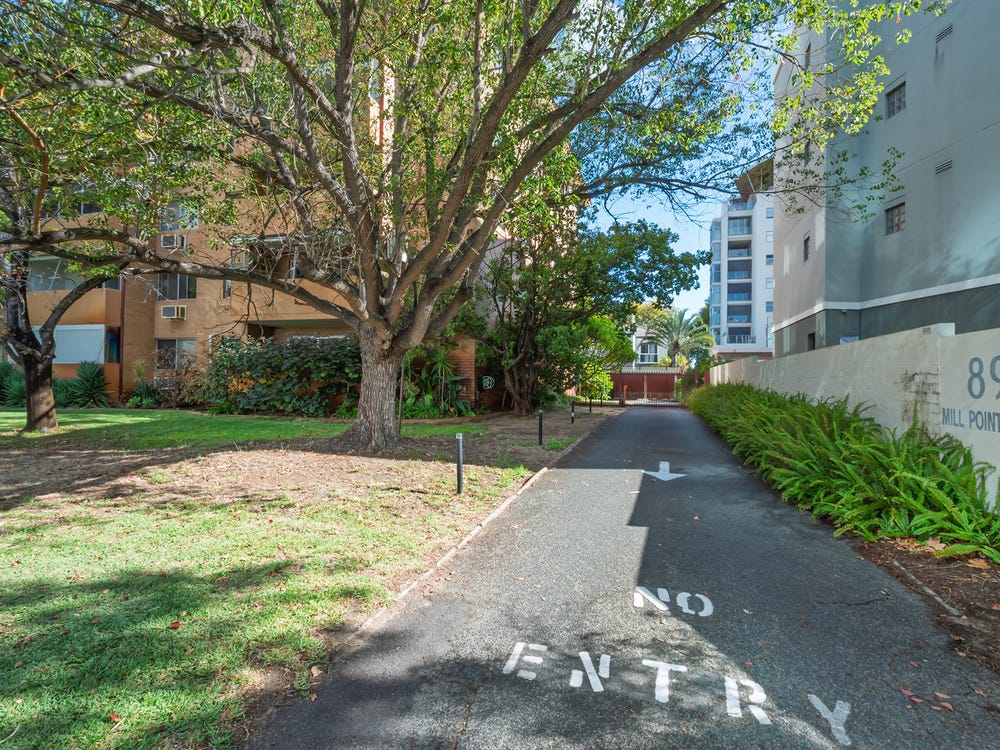
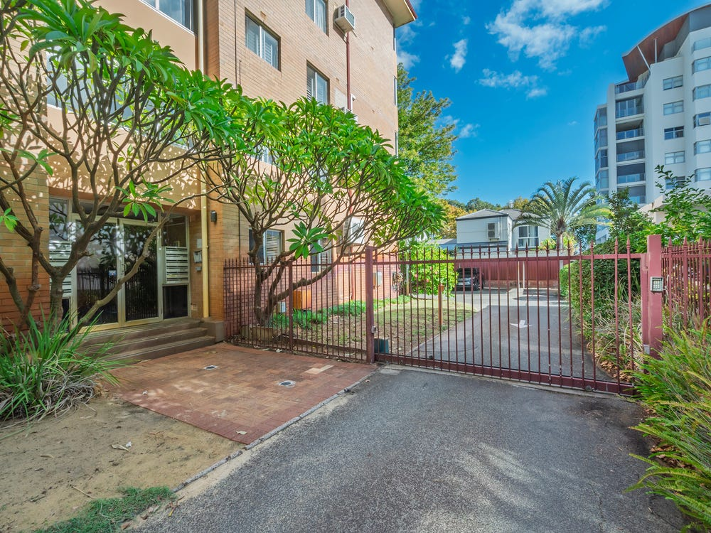


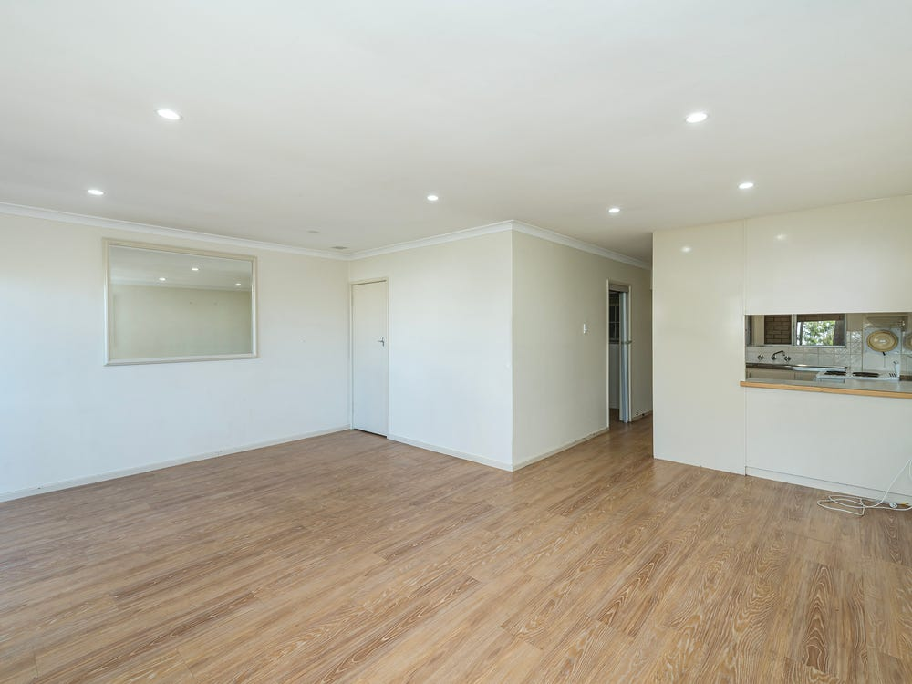

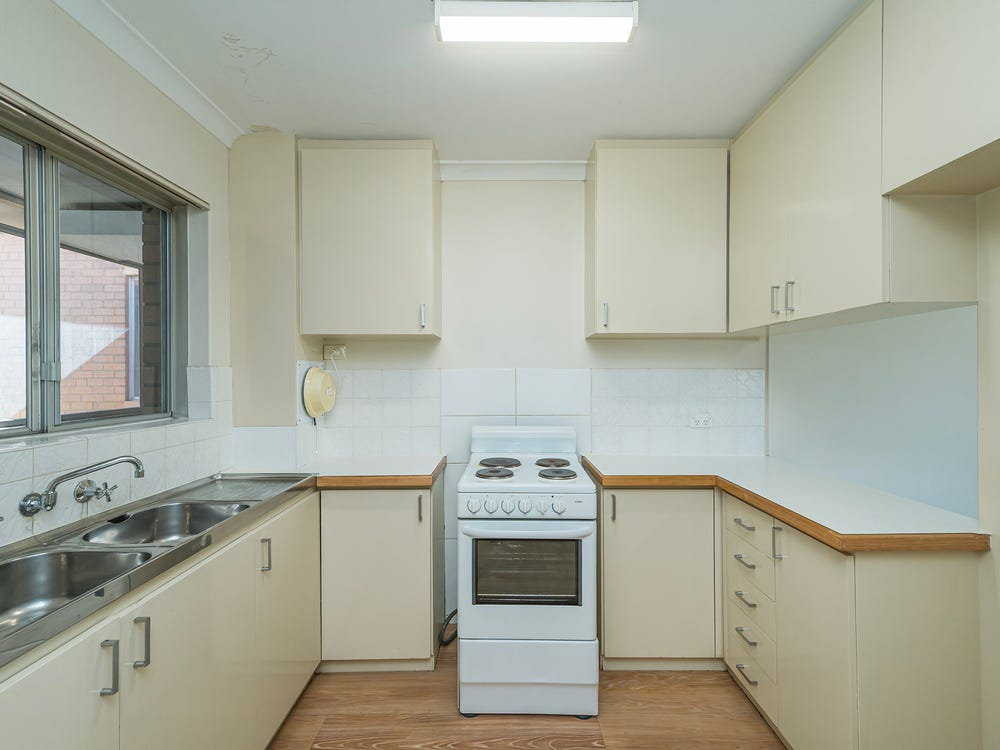


#4
$630
🚆 15분 🚶 513m 🚲 8min(1.9 km)
🚆 15분(도보 513m): 도보 0.3 km → Brook St Before Royal St[51] 6정거장/8 mins → 도보 0.2 km ·무환승 · ⚡최단 13분(도보 723m)
🛒 도보 576m 8분 (IGA Local Grocer East Perth)
종합 40.7 / 64
가격4.75/10$630 — 만점10, $700=3·$500=8 선형
통근5.79/1015분 버스·무환승, 역도보 513m
마트4.12/7도보 576m 8분 (IGA Local Grocer East Perth)
소음5/7Brown Street 122번지는 Claisebrook 철도 차량기지에서 약 175m 남쪽에 위치, 기지는 24시간 운영되나 기지 남쪽 경계에 소음벽이 설치된 기록 있음
주차2/2주차 1대
인테리어5/5모던 마감(5점), 화이트 모던 주방+스테인리스, 2010년대 이후 신축 감점 없음
카펫1.5/5이미지 01·10 거실/방 짙은 차콜-브라운 카펫 확인
detached1/5대형 108세대 아파트, 공용 루프탑 덱, 개인 발코니
감성2/3모던 신축 외관 특출 +1, East Perth 도심 +1
안전6.5/7description 'Secure garage parking' — 보안 게이트 +1
수납3/3description 'separate Storage room + Internal laundry' — 전용런드리+창고
🏘 동네 — East Perth는 Claisebrook Cove를 끼고 CBD 동쪽에 접한 고밀 신개발 주거지로, 2000년대 이후 대형 아파트 단지가 밀집해 있다. 108/122 Brown St는 대형 단지(108호)의 고층부 유닛으로, Claisebrook 차량기지(EMU 차고)가 약 175m 북쪽에 위치하는 것이 이 주소의 핵심 리스크다.
✅ 좋은 점
· 통근 최단 13-15분 — 이번 배치 전체에서 최상위권
· 모던 신축 주방 — 광택 흰 캐비닛, 가스쿡탑, 석영 카운터탑 사진 확인
· 다운라이트 천장, 에어컨 스플릿 확인
· IGA East Perth 도보 8분(576m)
· 가구 일부 포함(소파, 식탁, TV)
· 주차 1대 포함
⚠️ 나쁜 점 / 체크포인트
· 🔴 거실·침실 전실 다크 카펫 — 맨발 생활 불편, 입주 전 스팀청소 요청
· 🔊 Claisebrook 차량기지 175m — EMU 새벽 4:45부터 대량 이동, 24시간 운영. 소음벽 설치 기록 있으나 기지 향 배치 시 새벽 소음 배제 불가. 내부 호수 위치(기지 향/강 향) 반드시 확인
· 가구 포함 — 계약 종료 시 철거 조건 확인 필수
📐 연식·면적 — 다운라이트·광택 주방 마감으로 2010년대 중반 이후 신축 추정. 오픈플랜 대형 거실+주방, 발코니 확인. 108호 대단지 고층.
💰 가격 — $630/주. zone_median $610(n=21) 대비 $20 고호가. 통근 최단+신축 주방이 프리미엄 근거. (ASKING 호가 snapshot)
🆚 비교 — #1 5/51 Tate St $590 BARE(West Leederville): $40 저렴하고 하드우드, 통근 25분 — 바닥 우위는 Tate지만 통근은 Brown이 압도. #13 44/15 Gardner St $630 CARP(Como): 같은 가격인데 낡음·통근 34분 — 통근+내장 모두 Brown St 우위. #15 401/45 Adelaide Tce $590 MIX(East Perth): $40 저렴하고 통근 21분 — 가격·통근 모두 Adelaide 우위, 단 주방 마감은 Brown St가 우위.


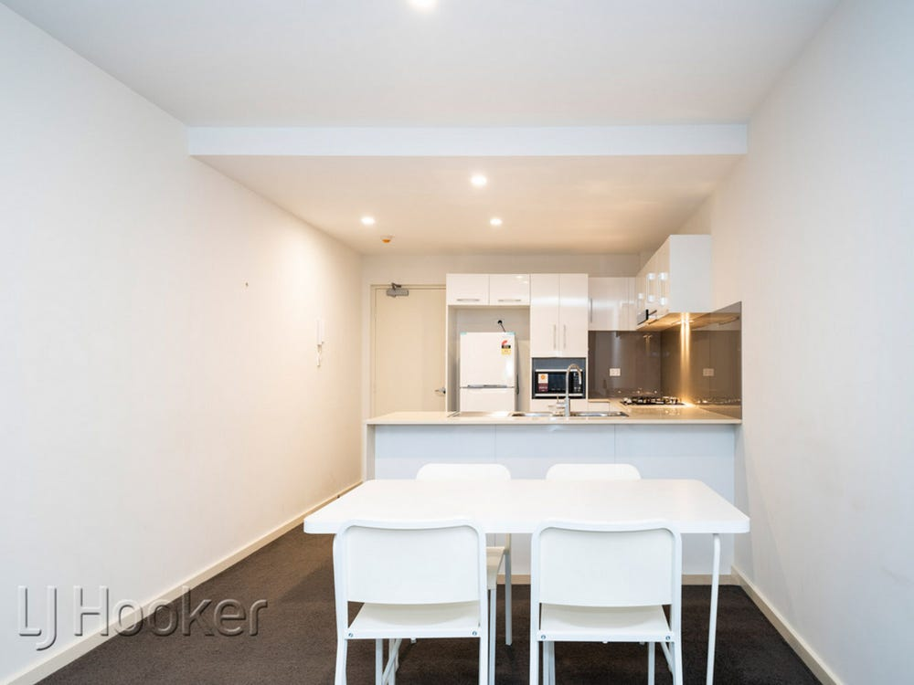
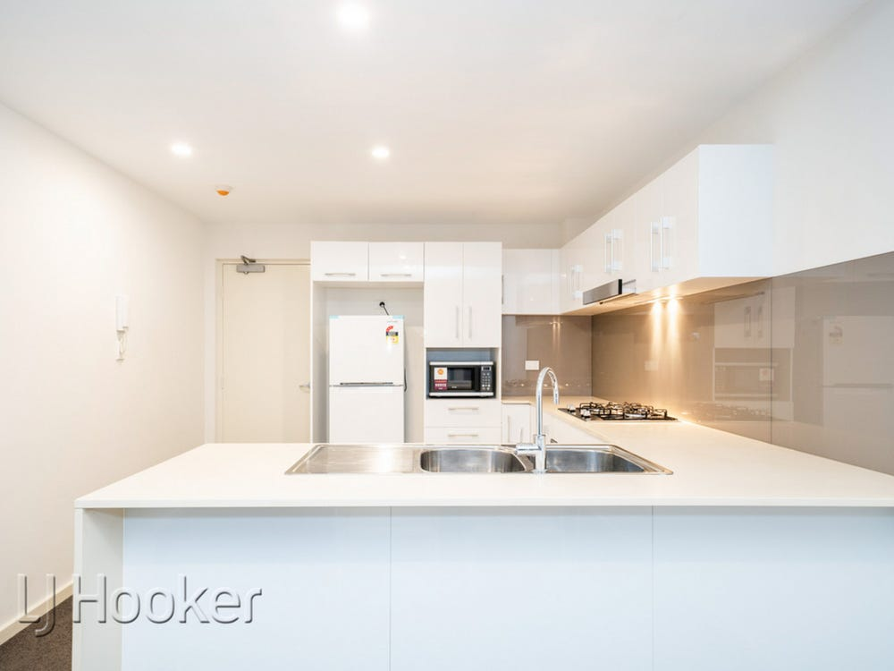


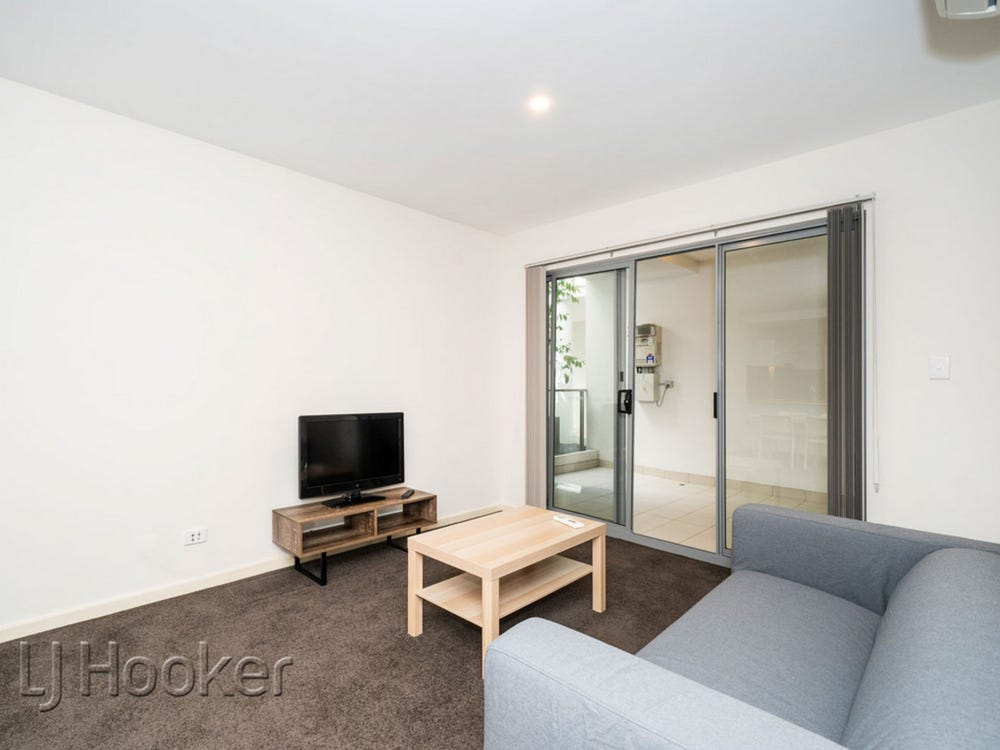


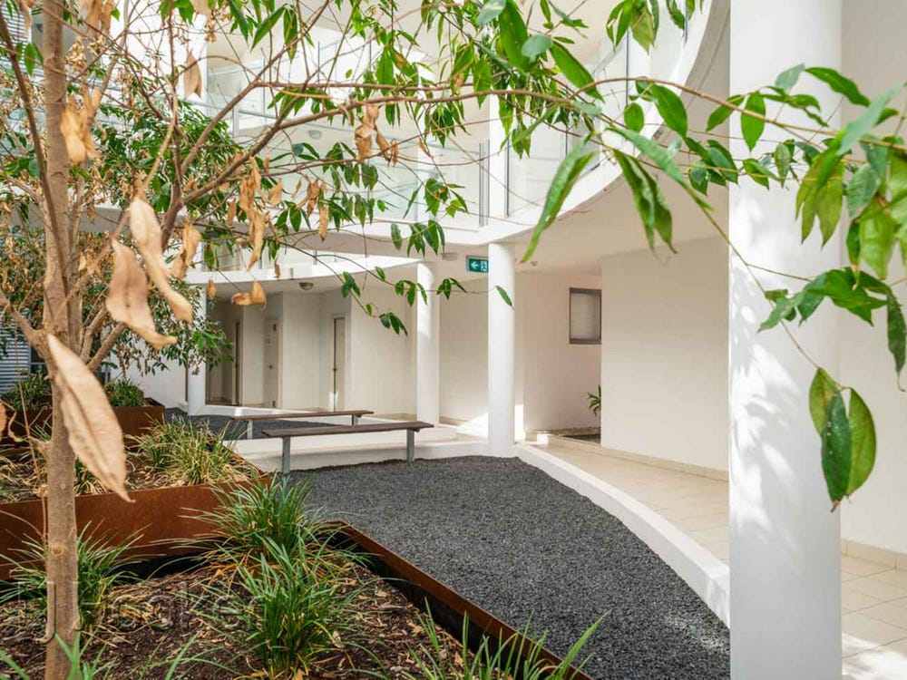


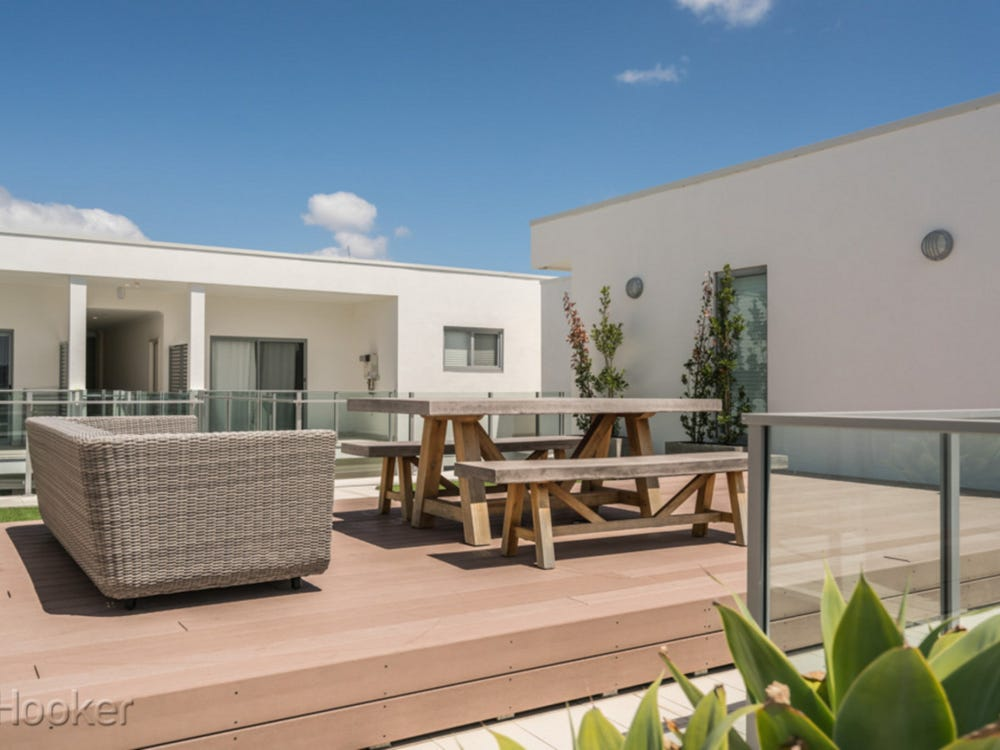


#5
$620
🚆 32분 🚶 541m 🚲 20min(5.5 km)
🚆 32분(도보 541m): 도보 0.3 km → Albany Hwy After Leonard St[960] 13정거장/25 mins → 도보 0.2 km ·무환승 · ⚡최단 30분(도보 1316m)
🛒 도보 499m 7분 (Perthtao)
종합 40.2 / 64
가격5.0/10$620 — 만점10, $700=3·$500=8 선형
통근4.0/1032분 버스·무환승, 역도보 541m
마트4.5/7도보 499m 7분 (Perthtao)
소음7/7McMaster Street는 Albany Hwy에서 내부로 들어간 주거 골목이며, 검색 결과에서 'established quiet streets' 확인
주차2/2주차 1대
인테리어2.75/5보통 마감(3점), 1970-80년대 벽돌 아파트 -0.25
카펫3.5/5거실/방 밝은 베이지 카펫+주방 타일, floor=MIX
detached1/5아파트 단지 유닛, 발코니(나무뷰) 확인
감성2/3발코니 나무 조망 +1, Victoria Park 동네 +1
안전5.5/7McMaster 조용한 주거 골목, 위험 근거 없어 중립
수납3/3description 'Lock up store - Own laundry' — 전용런드리+창고
🏘 동네 — Victoria Park는 Albany Hwy 카페 스트립을 중심으로 젠트리피케이션이 진행 중인 정착형 동네로, 젊은 직장인과 학생층이 섞인 활기찬 분위기다. McMaster St는 Albany Hwy에서 내부로 들어간 주거 골목으로 소음이 차단되며, 발코니가 트여 나무 너머 교외 전망이 열린다(CBD 스카이라인은 아님).
✅ 좋은 점
· 트인 발코니 — 나무 너머 교외 전망(사진 _06, CBD 스카이라인은 아님)
· 조용한 주거 골목 — McMaster St는 Albany Hwy 내부 블록, 교통소음 차단
· 960번 무환승 CBD 32분(최단 30분)
· 주방-욕실 바닥 타일 — 청소 용이
· 발코니 테라코타 타일, 나무 조망 쪽 개방감
· 주차 1대 포함
⚠️ 나쁜 점 / 체크포인트
· 🔴 거실·침실 전실 카펫 — 맨발 생활 불편, 입주 전 스팀청소 요청
· 주방 구형 전기쿡탑 + 크림 캐비닛 — 1980-90년대 마감 수준
· 침실 1 창문이 주차장 방향 — 일조·프라이버시 확인 필요
· Perthtao(마트)까지 도보 7분(499m) — 대형마트 아님, 품목 제한 가능
· 건물 연식 1980-90년대 추정 — 방음·단열 낮을 수 있음
📐 연식·면적 — 벽돌 구조, 창틀·캐비닛 스타일로 1980-90년대 준공 추정. 거실이 넓어 보이나 사진 왜곡 고려 필요. 2침실 아파트 표준 구조.
💰 가격 — $620/주. zone_median $610(n=21) 대비 $10 소폭 고호가. CBD 뷰 프리미엄 감안 시 수용 범위. (ASKING 호가 snapshot)
🆚 비교 — #1 5/51 Tate St $590 BARE(West Leederville): $30 저렴하고 하드우드라 맨발 OK, 통근 25분으로 더 빠름. 이 매물은 CBD 뷰와 Victoria Park 생활권이 차별점. #10 108/122 Brown St $630 CARP(East Perth): $10 비싸고 카펫 동급, 통근 15분으로 훨씬 빠름 — 교통 우선이면 Brown St. #25 31/12 McMaster St $650 CARP(Vic Park): 같은 McMaster St 동일 주소 다른 호수인데 $30 비싸고 카펫 동급 — 이 매물이 명확히 우위.


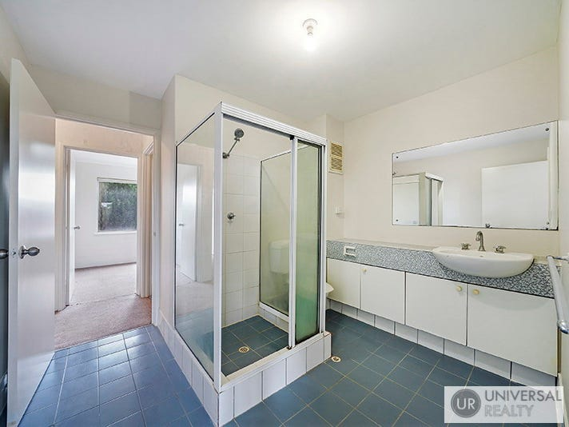


#6
$600
🚆 18분 🚶 537m 🚲 10min(2.5 km)
🚆 18분(도보 537m): 도보 0.4 km → Trafalgar Rd Nile Street[Yellow CAT] 9정거장/10 mins → 도보 0.1 km ·무환승
🛒 도보 270m 4분 (IGA Local Grocer East Perth)
종합 40.1 / 64
가격5.5/10$600 — 만점10, $700=3·$500=8 선형
통근5.41/1018분 버스·무환승, 역도보 537m
마트5.65/7도보 270m 4분 (IGA Local Grocer East Perth)
소음5/7Regal Place는 내부 골목이나 인근 IGA 배달 트럭 소음 사례 확인됨
주차2/2주차 1대
인테리어2.5/5거실 카펫+타일 MIX 보통, 주방 낡은 라이트우드+electric coil, 1990s −0.5 → 2.5
카펫3.5/5floor=MIX, 침실 카펫+거실 타일 — MIX 3.5
detached1/55층 Regal Apartments 고층, 발코니만
감성1/3East Perth village 강변 접근 동네 +1, 외관 특출하지 않음
안전6.5/7description 'secure boutique complex' + gated parking → +1
수납2/3주방 옆 별도 런드리 공간 확인 → 전용 런드리만
🏘 동네 — East Perth Village는 Claisebrook Cove와 강변 사이의 소규모 빌리지 상권(카페·레스토랑·소매점)을 품은 인너시티 주거지로, CAT 무료버스 덕에 차 없이도 CBD 접근이 가장 편리한 구역이다. 이 매물은 11 Regal Place로 East Perth Village 상권 코어에 속하며, 'Regal Apartments' 건물 최상층(59호) — 빌리지 생활권 접근이 본 그룹 중 최상이면서 조용한 포켓이다.
✅ 좋은 점
· 버스 통근 18분(Yellow CAT 무환승) — 배치 전체 중 최단급 통근
· 자전거 통근 10분 — 초근거리
· IGA 도보 4분(270m) — 장보기 편의 최상
· 가구 포함(fully furnished) — 이민 초도 입주 시 짐 최소화
· 에어컨 거실+침실 2개 전실 설치 확인(분리형)
· 건물 내 보안 주차 1대 포함
· 최상층 배치 — 상층 통행 소음 없음, 조망 우위
⚠️ 나쁜 점 / 체크포인트
· 🔴 거실·침실 전실 카펫(회색/청회색) — 맨발 생활 BAD
· 최대 계약 기간 12개월 제한 — 갱신 시 재협의 필요
· 가구 있으나 린넨(침구) 미포함 — 입주 초 침구 별도 구매 필요
· 주방 1990년대 전기쿡탑+구형 캐비닛
· 침실1이 거실과 반개방 구조 — 소음 차단 제한적
📐 연식·면적 — 'Regal Apartments' 5-6층 1990년대 후반 건물 추정. 평면도 포함(이미지 25번) — 2BD+1BTH 콤팩트 레이아웃. 전반 면적 보통 크기.
💰 가격 — $600/주. 통근·가구포함·에어컨 전실 감안 시 합리적. (ASKING 호가 snapshot)
🆚 비교 — 동가($600) 444388124(11/130 Terrace Rd, Perth, 전실 라미네이트, 통근 17분)과 비교 시 444388124는 바닥 우위지만 이 매물은 가구포함+CAT 접근성 장점. 432895522($590, East Perth, 카펫, 주차 없음)와 비교 시 이 매물은 $10 비싸지만 통근 18분(vs 21분)·주차 포함·가구포함으로 실용 우위 명확.
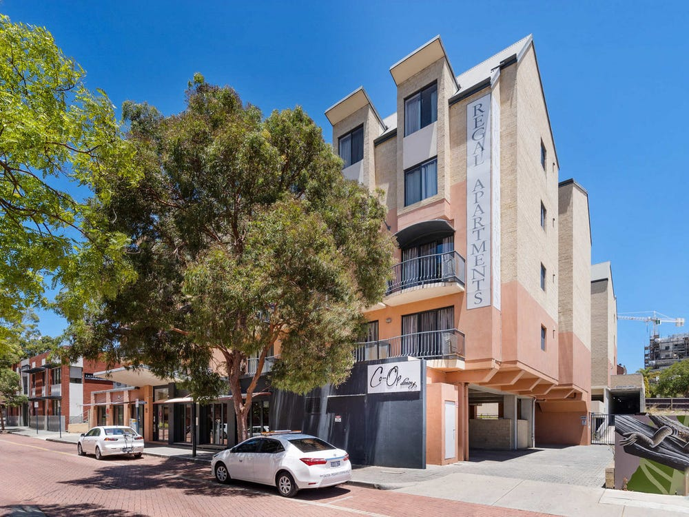


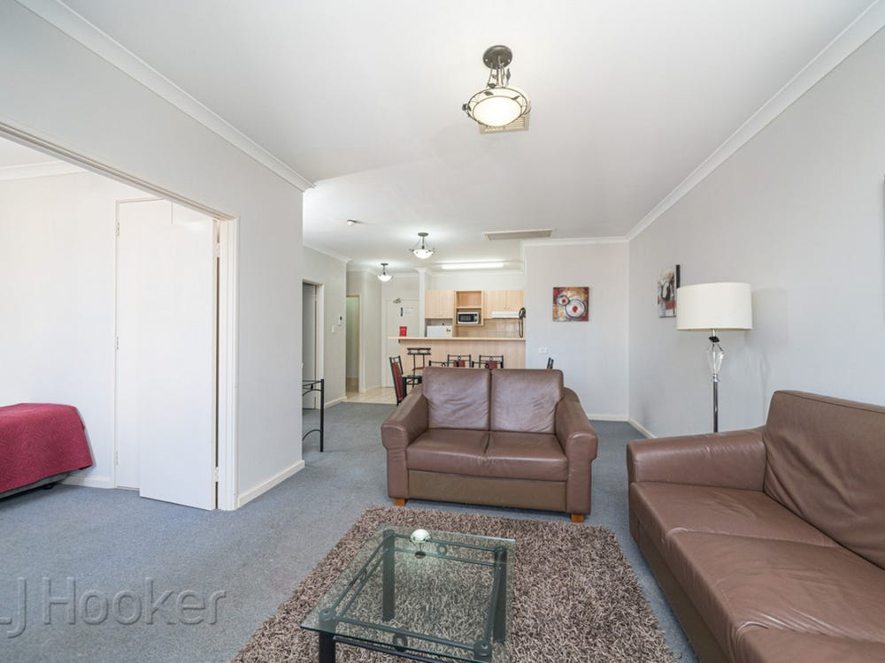

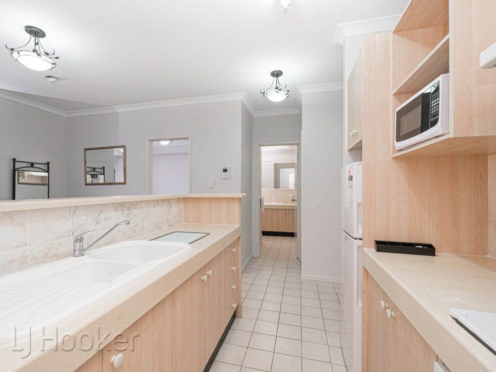
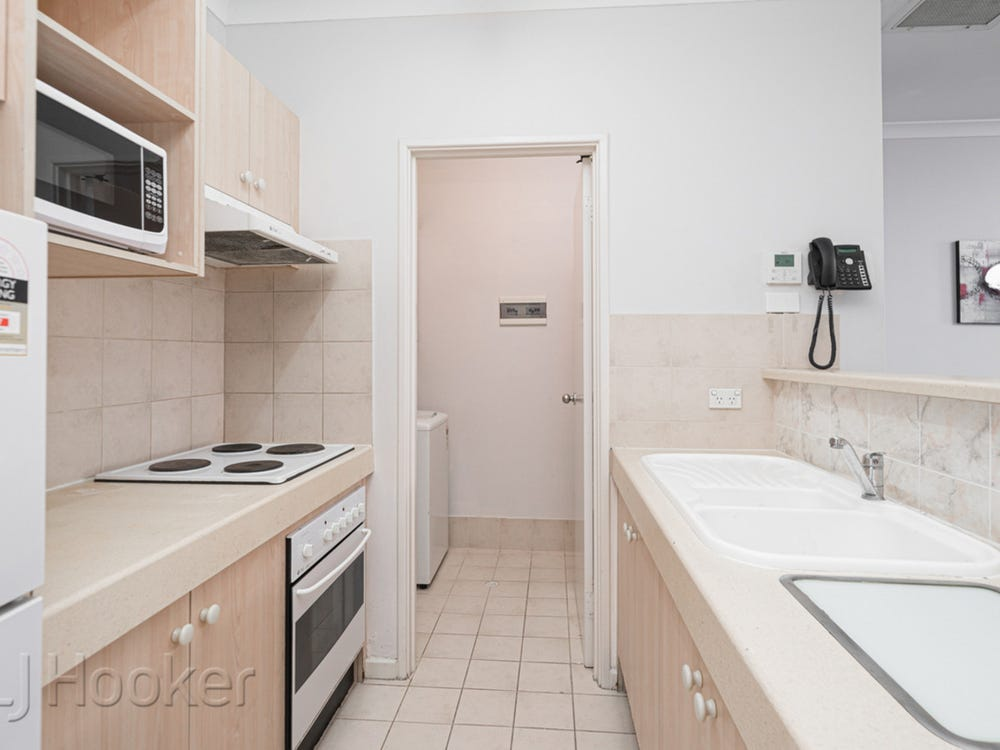
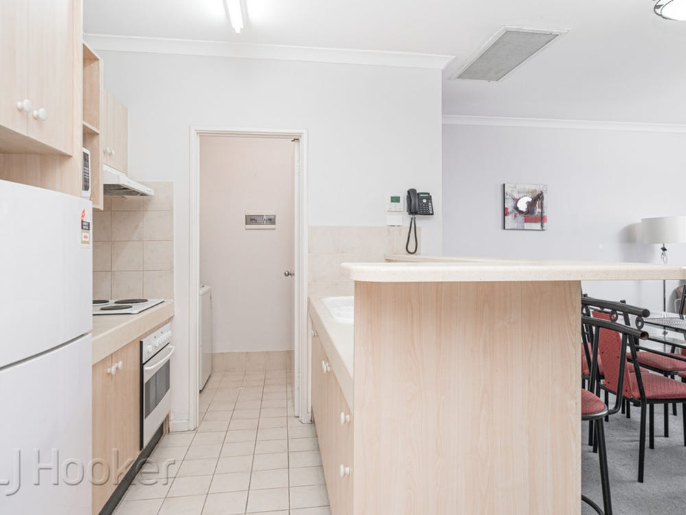


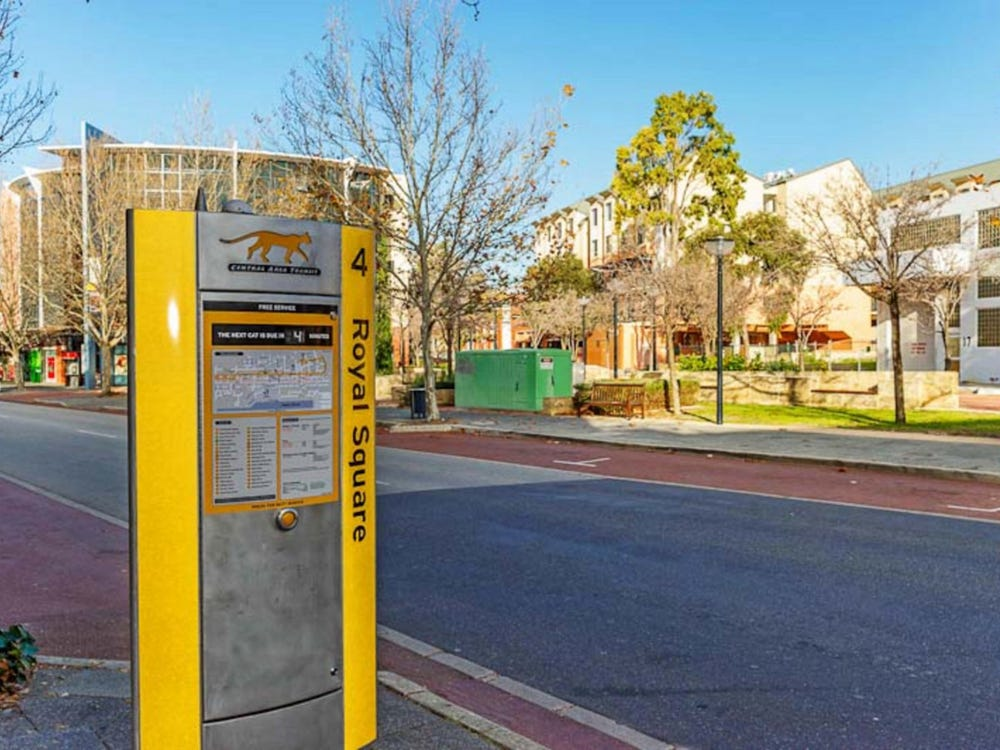
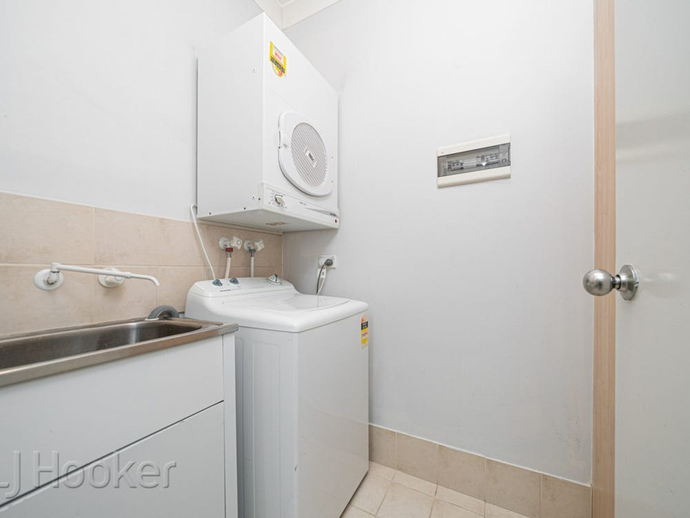


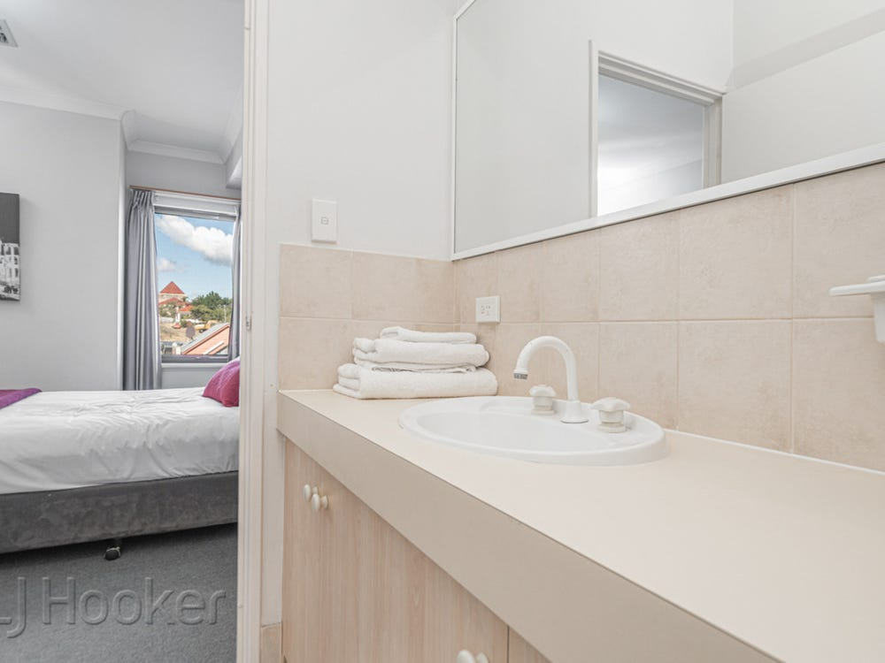
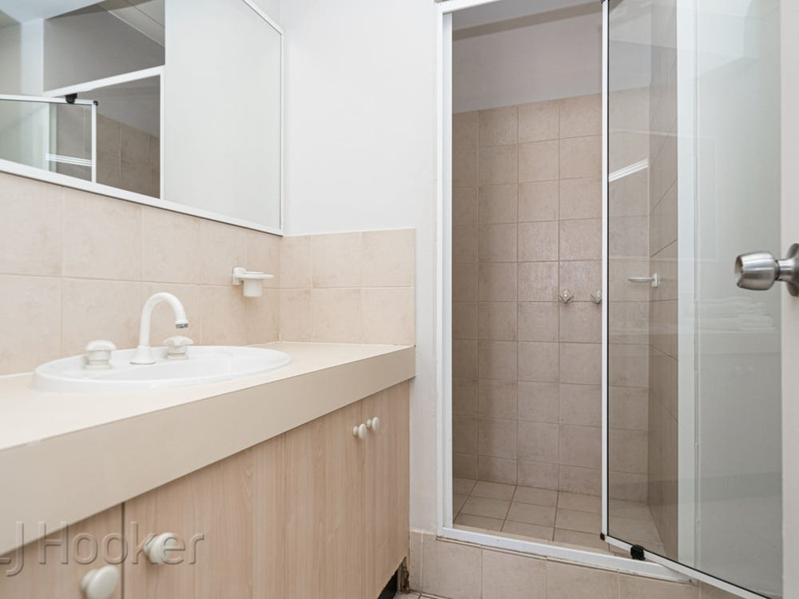

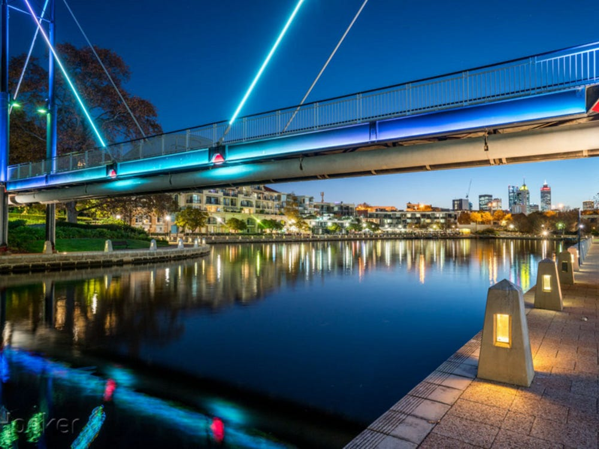


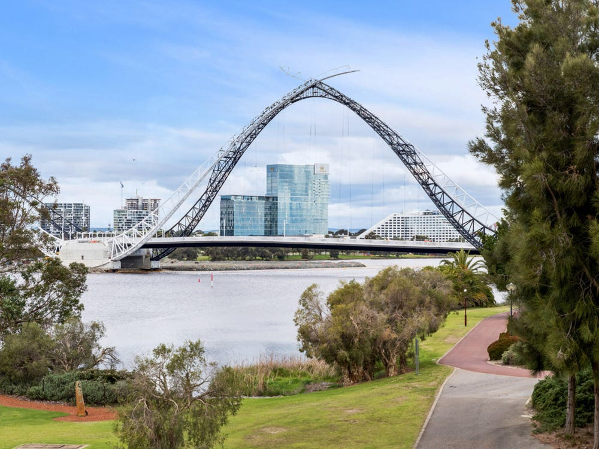
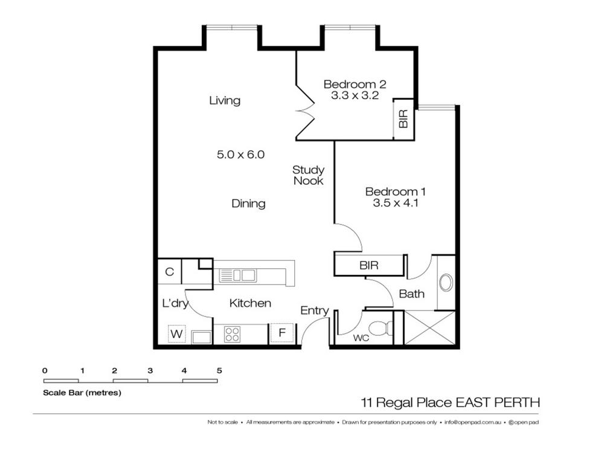


#7
$650
🚆 31분 🚶 567m 🚲 18min(5.2 km)
🚆 31분(도보 567m): 도보 0.3 km → Peninsula Rd Before East St[43] 17정거장/22 mins → 도보 0.3 km ·무환승
🛒 도보 872m 13분 (BHAARAT GROCERIES)
종합 39.9 / 64
가격4.25/10$650 — 만점10, $700=3·$500=8 선형
통근4.01/1031분 버스·무환승, 역도보 567m
마트2.64/7도보 872m 13분 (BHAARAT GROCERIES)
소음5/7Elizabeth Street는 Peninsula Rd 버스 간선과 인접하나 도로 자체는 주거 골목. Peninsula Rd 버스 소음이 간접 영향 가능.
주차2/2주차 1대
인테리어4.5/5모던 마감(bamboo living floor + 현대 bathroom vanity), 1980s 스타코 빌라 -0.5
카펫3.5/5MIX — living bamboo floor, 침실 밝은 베이지 카펫 깨끗
detached5/5사진 _01·_03 확인: 완전 분리 단층 빌라(Unit 8 독립 지붕), 전용 카포트+잔디 마당
감성2/3스페인풍 아치+테라코타 타일 외관 특출 +1, 가로수·잔디 단지 동네 예쁨 +1
안전6/7막다른 전용 단지 도로(Shelley Court private property) +0.5 → 6.0
수납1/3사진 17 전용 shed 확인, 런드리 위치 미확인, BIR만 언급 → 1점
🏘 동네 — Maylands는 인너시티 교외로 강변 포켓과 역세권이 공존한다. 이 매물은 Elizabeth Street로 'Peninsula Rd Before East St' catchment에 속하는 강 쪽 포켓의 일반 주거 골목 — Kirkham Hill 9번지와 비슷한 East St 쪽 끝, 세부는 확인 안 됨.
✅ 좋은 점
· 전체 리노베이션 — 주방 신형 캐비닛+쿼츠 카운터탑+스테인리스 오븐, 깔끔한 마감
· 거실 라미네이트 — 메인 생활 공간 맨발 OK
· 개인 야드+창고 — 외부 수납 공간 확보
· 스페인식 외관 단지(아치형 입구), 단지 분위기 양호
· 버스 정류장 도보 0.3km
· 자전거 통근 18분 유리
⚠️ 나쁜 점 / 체크포인트
· 침실 카펫(MIX) — 침실은 맨발 BAD
· $650으로 강 쪽 포켓 peer 중 비싼 편
· 버스 통근 31분
· 주방 리모델에도 불구 세탁기 분리 공간 여부 미확인
· 전용 야드지만 공간 크기 사진으로 정확 파악 어려움
· 에어컨 침실 1개 확인, 거실 여부 미확인
📐 연식·면적 — 광고에 연식·면적 없음 → 사진 추정. 스페인식 타일 지붕 단층 유닛 단지. 거실+식사 공간 구분된 구조로 면적 넉넉해 보임. 야드 포함으로 전체 사용 가능 공간 넓음. 정확한 면적은 inspection 확인.
💰 가격 — $650/주. Maylands 2베드 호가 median $600(n=18) 대비 +8%, peer 중 상위권. (ASKING 호가 snapshot)
🆚 비교 — 같은 East St catchment의 432670106($660, Kirkham Hill Terrace 9번지, 전실 라미네이트 완전 리모델)과 비교 시 이 매물은 $10 저렴하고 야드+창고 강점이 있으나 침실 카펫 약점. 맨발 선호 부부에게는 432670106이 근소 우위.


#8
$600
🚆 22분 🚶 903m 🚲 19min(5.5 km)
🚆 22분(도보 903m): 도보 0.6 km → Maylands[Ellenbrook Line] 5정거장/9 mins → 도보 0.3 km ·무환승
🛒 도보 243m 4분 (BHAARAT GROCERIES)
종합 39.6 / 64
가격5.5/10$600 — 만점10, $700=3·$500=8 선형
통근4.79/1022분 기차·무환승, 역도보 903m
마트5.79/7도보 243m 4분 (BHAARAT GROCERIES)
소음5/7Seventh Avenue는 Maylands역 남쪽 철로 횡단 교량과 인접, 기차 소음 가능성 있음
주차2/2주차 1대
인테리어4.5/5description 'freshly updated', 주방 흰캐비닛 리노, 카펫 밝고 깨끗(마감 5), 80년대 −0.5 → 4.5
카펫2.5/5floor=CARP, 밝은 베이지 카펫 깨끗 — CARP(밝고 깨끗) 2.5
detached1/52층 아파트, 전용 마당 없음, 발코니만
감성1/3Eighth Ave 카페 거리 동네 +1, 외관 평범
안전5.5/7기차 소음 리스크만, 치안 근거 없음 — 중립
수납2/3전용 런드리룸(tub sink+세탁기) 명확 확인 → 런드리만
🏘 동네 — Maylands 역세권과 Eighth Ave 카페 거리 도보권, 젠트리피케이션 활발한 포켓이다. 이 매물은 같은 Seventh Ave 44번지 단지(역·카페 거리 도보권)로, 역세권 포켓 중에서도 편의성 최상위 그룹이며 위 매물(444329476)과 사실상 동일 위치다.
✅ 좋은 점
· 기차 통근 22분 — 역세권 최단 그룹
· 욕실·주방 완전 리노베이션(블랙 피팅, 깔끔한 마감)
· 같은 단지 다른 호 대비 욕실 마감 최상급
· Eighth Ave 카페 거리 도보권으로 생활 편의 최우수
· 단지 외관 정돈(Amaroo Gardens, 사진 확인)
· 위 호(444329476)보다 리노베이션 범위 더 넓어 보임
⚠️ 나쁜 점 / 체크포인트
· 거실·침실 전체 카펫(CARP) — 맨발 생활 BAD
· $600으로 같은 단지 444329476($550, 거실 라미네이트)보다 $50 비싸면서 바닥 열위
· 가격 상승분이 욕실 리모델만으로 정당화되는지 판단 필요
· 에어컨 위치 사진 내 미확인
📐 연식·면적 — 광고에 연식·면적 없음 → 사진 추정. 44번지 Amaroo Gardens 단지, 2층 적벽돌 외관 확인. 거실은 카펫 전체이나 공간감은 넉넉. 방은 더블 침대 충분 크기. 정확한 면적은 inspection 확인.
💰 가격 — $600/주. Maylands 2베드 호가 median $600(n=18) 대비 0%(median 일치), peer 중 중간가. (ASKING 호가 snapshot)
🆚 비교 — 같은 단지 다른 호 444329476($550, 거실 라미네이트)과 비교 시 이 매물은 $50 비싸고 전실 카펫으로 바닥 열위. 욕실 리모델 선호라면 이 매물, 맨발 생활 최우선이면 444329476 선택.


#9
$650
🚆 22분 🚶 331m 🚲 16min(4.6 km)
🚆 22분(도보 331m): 도보 62 m → Beaufort St After First Av[950] 12정거장/16 mins → 도보 0.3 km ·무환승
🛒 도보 304m 5분 (The Good Grocer 2nd Ave IGA)
종합 38.7 / 64
가격4.25/10$650 — 만점10, $700=3·$500=8 선형
통근5.7/1022분 버스·무환승, 역도보 331m
마트5.48/7도보 304m 5분 (The Good Grocer 2nd Ave IGA)
소음3/7738 Beaufort Street는 Mount Lawley 중심 간선도로이며 950번 고빈도 버스가 직통 운행. 주간·야간 교통 소음 상존 확인.
주차2/2주차 1대
인테리어3.75/51970s 벽돌 아파트, 내부 풀리노(모던 kitchen gas cooktop·bathroom) → 70년대 풀리노 ≈ 3.75
카펫5/5BARE — 하드플로어 확인, 카펫 없음
detached1/5private balcony 언급, 마당 없음, 아파트 단지
감성2/3황혼 외관 사진 아름다운 건물 +1, 가로수 Mount Lawley 동네 +1
안전5.5/7Beaufort St 소음 높음이나 corridor·쇠창살 근거 없음 → 중립
수납1/3뒤뜰 shed 확인, 런드리·BIR 미언급 → 1점
🏘 동네 — Mount Lawley는 CBD 북동쪽 4km, 헤리티지 주택과 가로수 짙은 거리가 어우러진 확립된 이너 서버브로 렌트 단가가 높은 편이다. 이 매물은 셋 중 유일하게 Beaufort Street 본도로(738번지)에 직접 면해 카페·레스토랑 스트립과 950번 버스 노선 위에 바로 얹혀있는 가장 번화한 어반 빌리지 포지션이다.
✅ 좋은 점
· 거실 파켓(헤링본) + 침실 라미네이트 — 전 공간 맨발 생활 OK, 카펫 없음
· 발코니에서 leafy 녹지 전망 확인(사진04), 바깥 채광 유입
· 950번 버스 도보 62m — ECU City 22분, 셋 중 가장 짧은 도보 접근
· 키친 리노 흔적(다크 석영 카운터톱·화이트 캐비닛·가스 호브), 실용적 크기
· 발코니 개방으로 환기 확보
⚠️ 나쁜 점 / 체크포인트
· Beaufort Street 본도로 직면 — 교통·야간 소음 노출 가장 큼, inspection 시 소음 직접 확인 필수
· 외관 황토벽돌 2층 구축(사진01), 연식 상당히 오래된 것으로 추정
· 70m² 소형 — 두 사람이 쓰기 다소 협소할 수 있음
· 욕실+세탁기 겸용룸 구성 — 세탁 동선이 욕실과 겹치는 불편함
· 에어컨 유무·범위 광고에서 불명확 — inspection 시 확인 필요
· 발코니 상판 콘크리트 노출, 수납 공간 적을 가능성
📐 연식·면적 — 광고에 연식·면적 없음 → 사진 추정. 외관 황토벽돌 구축과 실내 파켓 패턴으로 보아 40-50년 이상 된 건물로 추정. LDK 공간이 하나의 직선형 룸에 응접+식사+주방이 압축된 소형 레이아웃이며 전체적으로 좁고 복도 공간도 제한적. 정확한 면적은 inspection 확인.
💰 가격 — $650/주. Mount Lawley 2베드 호가 median $667(n=6) 대비 -2.5%, 사실상 시세 정중앙. peer 3건 중 444354380·444206564가 공동 최저가($650), 444344984($680)보다 $30 저렴. (ASKING 호가 snapshot)
🆚 비교 — peer 중 가격·베드룸 수가 완전히 동일한 444206564($650, 2베드, First Avenue)와 1:1 비교. 444206564는 바닥 전체 카펫 + 공용 수영장 보유, 이 매물은 바닥 전부 하드우드/라미네이트(맨발 OK) + 수영장 없음. 통근은 444206564가 20분으로 이 매물(22분)보다 약간 빠르나 차이 미미. 위치는 이 매물이 Beaufort Street 본도로라 소음 부담이 크고, 444206564는 First Avenue 골목이라 조용함. 맨발 생활을 중시한다면 이 매물이 바닥에서 압도적으로 우위이나, 소음 허용치를 먼저 확인해야 한다.


#10
$550
🚆 55분 환승 🚶 1239m
🚆 55분(도보 1239m): 도보 0.2 km → Forrest Rd After Seventh Rd[246] 4정거장/3 mins → 도보 0.8 km → Armadale[Armadale Line] 18정거장/41 mins → 도보 0.3 km ·환승1회
🛒 도보 471m 7분 (Forrest Rd Fresh)
종합 38.1 / 64
가격6.75/10$550 — 만점10, $700=3·$500=8 선형
통근0/1055분 기차·환승1회, 역도보 1239m · 자전거30분+(−3)
마트4.64/7도보 471m 7분 (Forrest Rd Fresh)
소음7/7Seventh Road는 간선도로·철로와 직접 인접하지 않는 주거 골목이며 107번지는 도로 말단부에 위치.
주차2/2주차 1대
인테리어1.75/5거실·침실은 깔끔(타일+크림벽, 가상스테이징)·욕실 리노, 주방만 70년대 갈색 목재 캐비닛 낡음 → 전체 보통 3, 70년대 연식 −1.25
카펫3.5/5MIX — 생활공간 타일/비닐, 침실 짙은 갈색 카펫(img04·07).
detached5/5img07 외관 독립 벽돌 단독주택. img02 후면 완전 펜스 대형 전용 마당(gazebo 포함). 완전분리 villa.
감성0/3건조한 흙바닥 마당, 평범 외곽 벽돌 주택. 특출 요소 없음.
안전4.5/7Armadale corridor −1.5, micro '조용한 골목 끝 포켓' +0.5 회복 → 4.5.
수납3/3img01 독립 런드리룸(세탁기+건조기+싱크), img02 후원 금속 창고 확인 → 전용런드리+창고 3점.
🏘 동네 — Armadale은 CBD 남동 26km 저비용 외곽 교외로 렌트가 광역권 최저 수준이나 기차 통근 55분을 감수해야 한다. 107b Seventh Road는 역세권과는 떨어진 주거 골목 끝에 위치한 단층 주택으로 독립적인 뒤뜰과 파고라를 갖춘 이 지역 내 주거 밀도 낮은 포켓이다.
✅ 좋은 점
· 🟢 거실 타일 — 맨발 OK (카펫 없는 생활공간)
· 세탁기+건조기 완비, 별도 세탁실
· 넓은 뒤뜰 + 나무 파고라 + 창고 — 야외 생활 여유
· Forrest Rd Fresh 도보 7분(471m) — 장보기 접근 가능
· Seventh Road 주거 골목 — 소음 낮음
⚠️ 나쁜 점 / 체크포인트
· 🔴 침실 카펫 — 펫 이력 확인, 스팀청소 요청
· 주방 갈색 목재 캐비닛 심하게 노후화·일부 파손 — 입주 전 교체 요청 협의 또는 감수
· 전기 코일 렌지 — 가스 없음, 비효율
· 🚨 Armadale 외곽 — CBD 통근 55분(버스+기차 환승), 범죄 통계 상 Armadale corridor 주의
· C존 매물 중 통근 최장 수준
📐 연식·면적 — 외관 벽돌 단층 주택으로 1970-1980년대 추정. 거실 공간 자체는 넓으나 주방 마감 연식이 뚜렷함. 세탁실 모자이크 타일은 별도 리노베이션으로 욕실 마감은 비교적 깔끔.
💰 가격 — $550/주. zone_median $575(n=7) 대비 $25 저렴. 공간(야드·세탁) 포함 C존 최저가 수준. (ASKING 호가 snapshot)
🆚 비교 — 동일 Armadale의 #26 3/76 Owtram Road($575, 56분)보다 $25 저렴하고 야드가 훨씬 넓지만 주방 노후도가 더 심각함. #29 38 Hobbs Dr($500, 56분)보다는 비싸지만 세탁기·건조기 완비가 강점. #28 6/65 Orr Street($600, Maddington 41분)보다 $50 저렴하나 통근이 14분 더 길다.

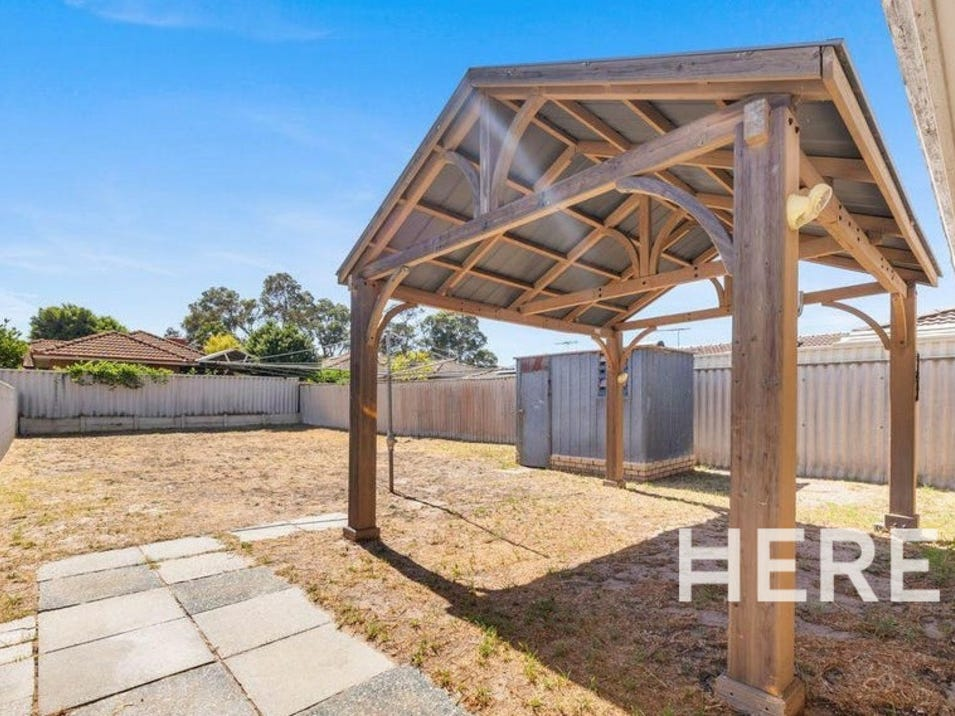


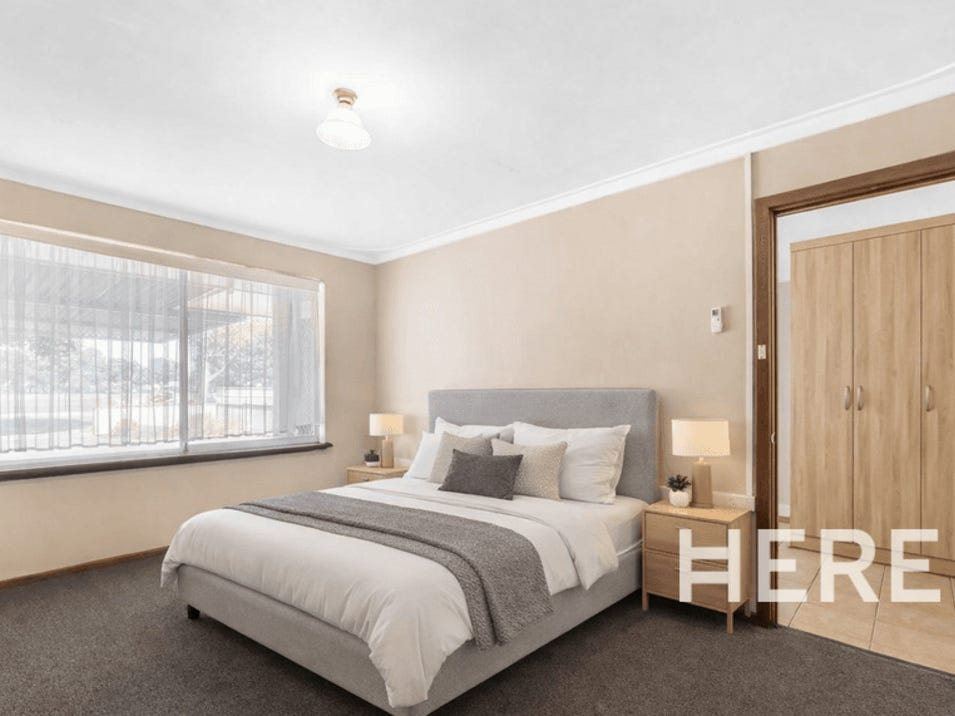
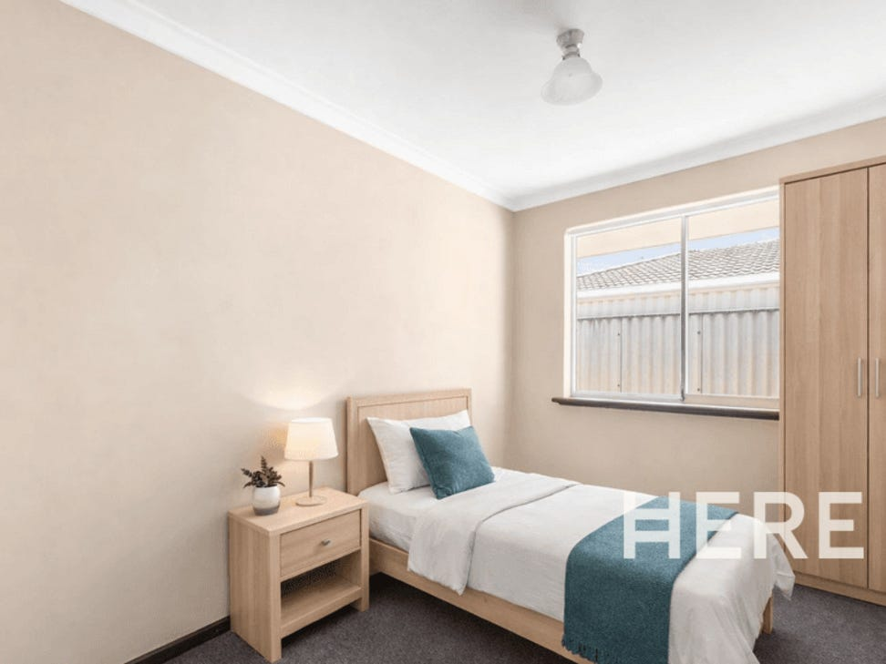
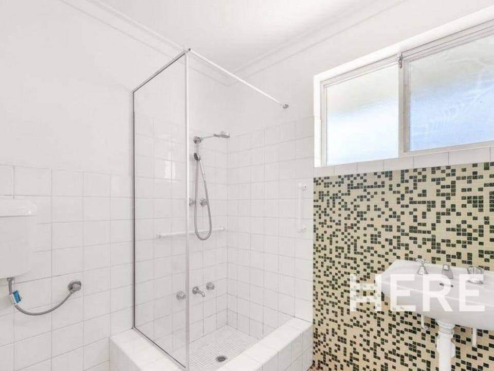
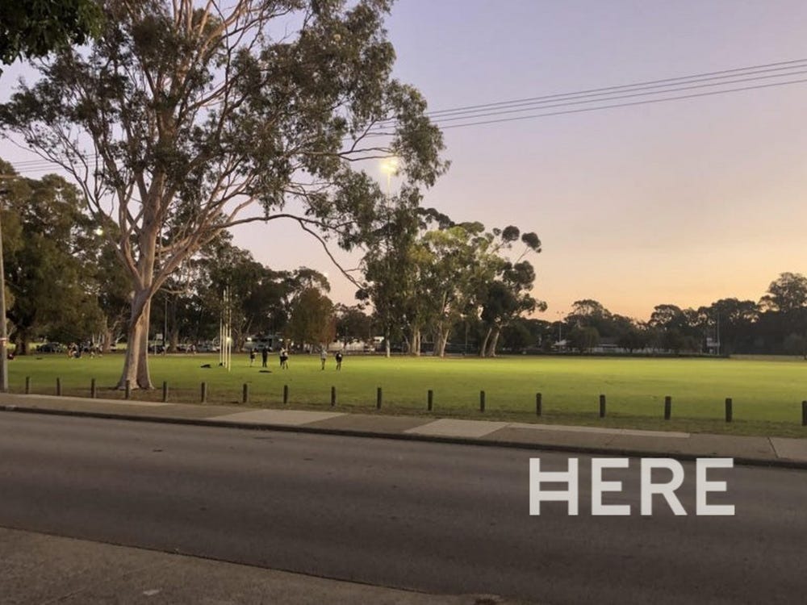


#11
$610
🚆 39분 환승 🚶 544m 🚲 21min(5.9 km)
🚆 39분(도보 544m): 도보 0.3 km → Berwick St Before King George St[72] 6정거장/16 mins → 도보 56 m → Adelaide Tce Westend Causeway[960] 9정거장/15 mins → 도보 0.2 km ·환승1회 · ⚡최단 38분(도보 1878m)
🛒 도보 669m 10분 (IGA Local Grocer Kensington)
종합 37.4 / 64
가격5.25/10$610 — 만점10, $700=3·$500=8 선형
통근2.29/1039분 버스·환승1회, 역도보 544m
마트3.65/7도보 669m 10분 (IGA Local Grocer Kensington)
소음7/7King George Street는 Berwick St 우회전 차단으로 교통량이 줄어 조용해졌다는 지역 리뷰 확인, 주거 골목 성격
주차2/2주차 1대
인테리어2.75/5보통 마감(3점), 구형 주방+방 하드우드 리노, 1970년대 -0.25
카펫5/5방 하드우드+타일, floor=BARE 확인
detached1/57층 대형 단지, 공용 잔디마당, 발코니만
감성1/3Victoria Park 동네 +1, 외관·뷰 없음
안전6.5/7이미지 14 보안 게이트+펜스 확인 +1
수납1/3욕실 내 세탁기 combo, 독립 런드리 아님, BIR만
🏘 동네 — 빅토리아 파크는 Causeway로 CBD와 바로 이어지는 강변 인접 정착형 동네로 젊은 학생·직장인 비중이 높다. Berwick St(72)에서 한 블록 안쪽 King George St 주거 골목 — 960 스트립권보다 조용한 내부 주택가, CBD는 72 환승 동선.
✅ 좋은 점
· 전실 다크 라미네이트 — 맨발 생활 GOOD, 카펫 제로
· 1층 저층 유닛으로 슬라이딩 도어를 통한 외부 접근 편리
· 거실에 스플릿 에어컨 확인(사진 4장 기준), 거실 공간이 비교적 여유 있고 자연광 입사 가능
· 주차장이 지붕 있는 커버드 형식으로 확인됨(사진 1장 기준 단지 전경)
· 960·72 환승 경로, 최단 38분 또는 도보 많이 걸으면 단축 가능
⚠️ 나쁜 점 / 체크포인트
· 구형 코일 쿡탑(2개 판 확인), 주방 캐비닛은 화이트 단순형으로 수납 제한적
· 사진상 단지가 대규모 아파트 블록(7-8층) 단지여서 관리비나 strata 비용 있을 가능성
· 72 환승 1회 필요 — 직결 960 노선 아님
· 주방이 좁은 갤리 구조로 두 명이 동시 요리하기 빠듯할 수 있음
· 1층 저층이라 프라이버시 확인 필요
📐 연식·면적 — 광고에 연식·면적 없음 → 사진 추정. 단지는 1970-80년대 고층 아파트 블록으로 외관이 오래됨. 유닛 내부는 라미네이트 교체 후 내부 컨디션 보통 수준. 거실 LDK 일체형으로 폭은 넓은 편이나 길이는 짧아 보임. 정확한 면적은 inspection 확인.
💰 가격 — $610/주. Victoria Park 2베드 호가 median $650(n=10) 대비 -6%, peer 중 하위권. (ASKING 호가 snapshot)
🆚 비교 — 같은 2베드 최저가 그룹인 437059256($550, Berwick St, CARP)과 비교: $60 더 비싸지만 전실 라미네이트로 맨발 생활 선호 기준 명확한 우위. 통근도 37분 vs 39분으로 비슷. 바닥 개선 가치가 $60을 정당화한다.


#12
$650
🚆 31분 🚶 486m 🚲 20min(5.4 km)
🚆 31분(도보 486m): 도보 0.3 km → Albany Hwy After Leonard St[960] 13정거장/25 mins → 도보 0.2 km ·무환승 · ⚡최단 29분(도보 1261m)
🛒 도보 512m 7분 (Perthtao)
종합 36.0 / 64
가격4.25/10$650 — 만점10, $700=3·$500=8 선형
통근4.28/1031분 버스·무환승, 역도보 486m
마트4.44/7도보 512m 7분 (Perthtao)
소음5/7McMaster Street는 Albany Hwy 이면 주거 골목이나 Albany Hwy 교차점 근방으로 간선 소음 간접 영향 가능.
주차2/2주차 1대
인테리어3/51980s 단지 -0.75이나 refurbished 리노 확인(모던 kitchen·paint) → 3.0
카펫2.5/5CARP — 침실 밝은 베이지 카펫 깨끗, 주방 하드플로어 혼재
detached1/53층 최상층 발코니(Crown Perth·Optus Stadium 뷰), 마당 없음
감성1/3발코니 Crown Perth+Optus Stadium 시티뷰 +1, 외관·동네 무난
안전5.5/7McMaster St 주거 골목, corridor·쇠창살 근거 없음 → 중립
수납3/3description 'Lock up store' 전용창고 + 'own laundry' → 전용런드리+창고 3점
🏘 동네 — Victoria Park는 Albany Hwy 카페·레스토랑 스트립을 중심으로 젊은 직장인·학생 비중이 높은 젠트리피케이션 진행형 동네로, 960 버스로 CBD가 31분 연결된다. 이 매물은 McMaster Street 12번지 — Albany Hwy 스트립에서 도보 약 400m 안쪽 조용한 포켓이며, 3층 최상층으로 Crown Perth와 Optus Stadium이 보이는 파노라마 뷰를 가진 탑플로어 호실이다.
✅ 좋은 점
· 최상층(3층) 파노라마 뷰 — Crown Perth, Optus Stadium, Perth CBD, Kings Park 확인
· 욕실+세탁실 완전 리모델 — 블랙 피팅 샤워부스+세면대, 최신 마감
· 주방 리모델 — 화이트 캐비닛+granite 카운터탑+오븐+식기세척기
· 에어컨 스플릿(Mitsubishi 인버터) 확인
· 공용 수영장 포함
· Albany Hwy 카페·식당 스트립 도보 접근
· 마트 도보 512m(Perthtao)
⚠️ 나쁜 점 / 체크포인트
· 🔴 전실 카펫(밝은 회색) — 맨발 생활 BAD
· 사진 일부 디지털 스테이징 — 실제 공실 상태 inspection 필수
· 욕실+세탁기가 같은 공간에 통합 — 동선 불편 가능
· 통근 31분(버스 무환승) — 기차 없음, 버스 의존
📐 연식·면적 — 사진 추정: 1980-90년대 저층 3층 단지. 리모델로 실내 마감은 현대적. 거실+식당 오픈 플랜으로 여유 있는 면적. 침실 2개 모두 더블 가능.
💰 가격 — $650/주. Victoria Park 2베드 median($650, n=10) 정확히 일치. (ASKING 호가 snapshot)
🆚 비교 — #6 3/76 King George St $610 BARE(Vic Park): $40 저렴하고 라미네이트, 통근 39분으로 비슷 — 바닥 우위는 King George. 이 매물은 파노라마 뷰+욕실 리모델이 프리미엄 근거. #7 11/26 McMaster St $620 MIX(Vic Park): 동일 McMaster St 이면 주소인데 $30 저렴하고 MIX 바닥 — 이 매물은 $30 비싸고 카펫이라 뷰 선호 없으면 열위.

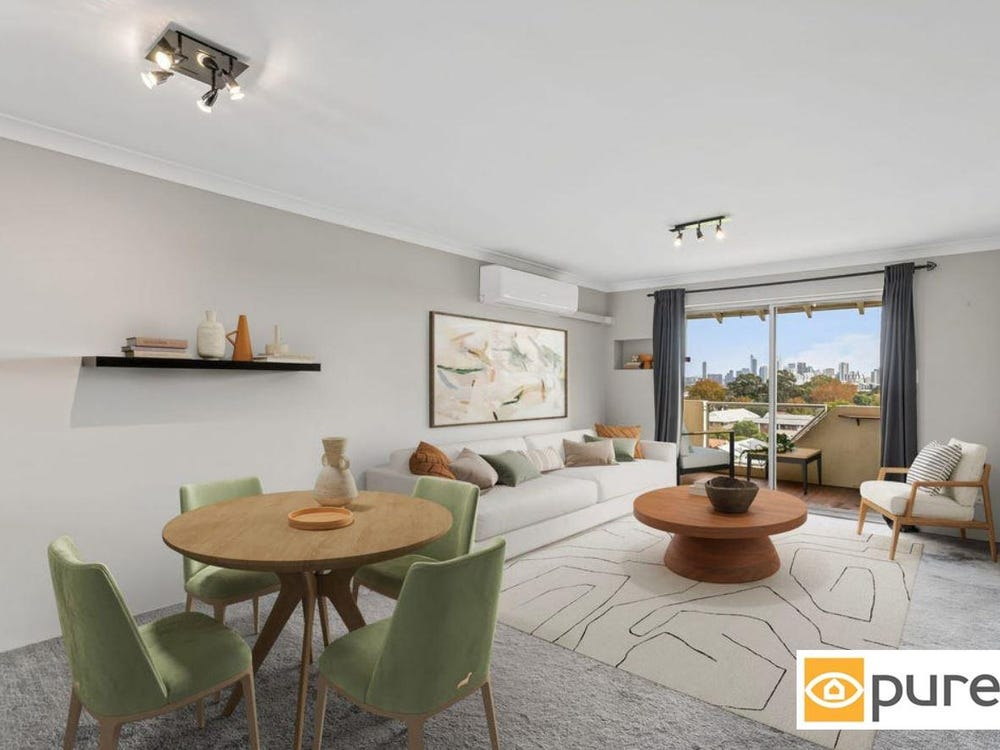
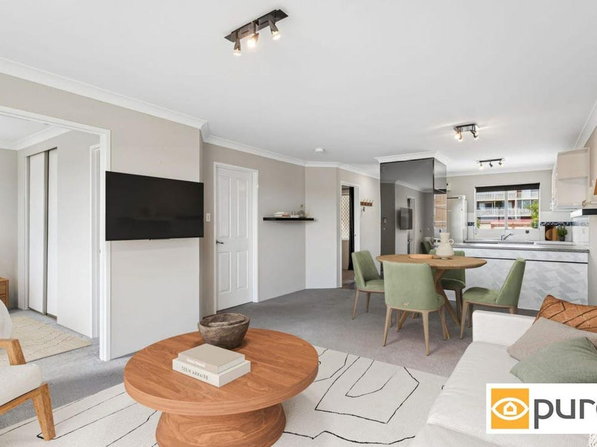
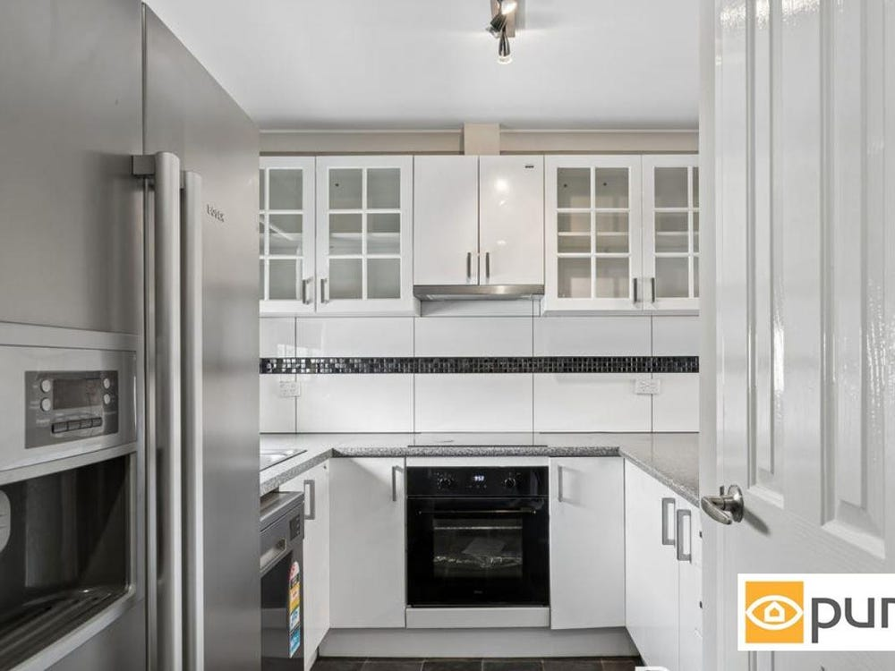

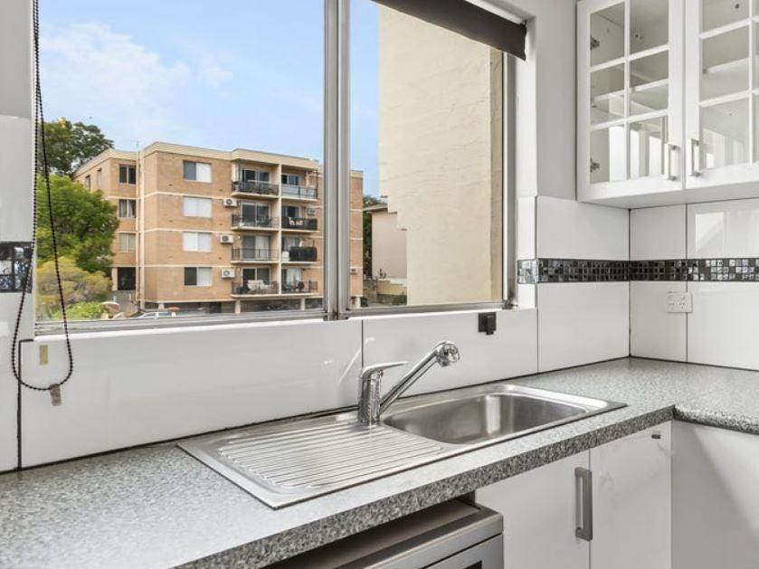

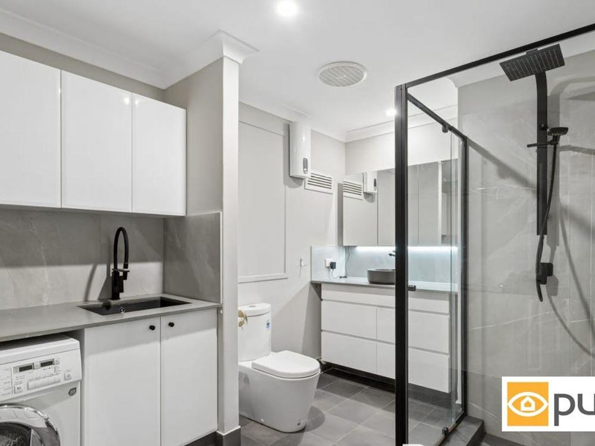


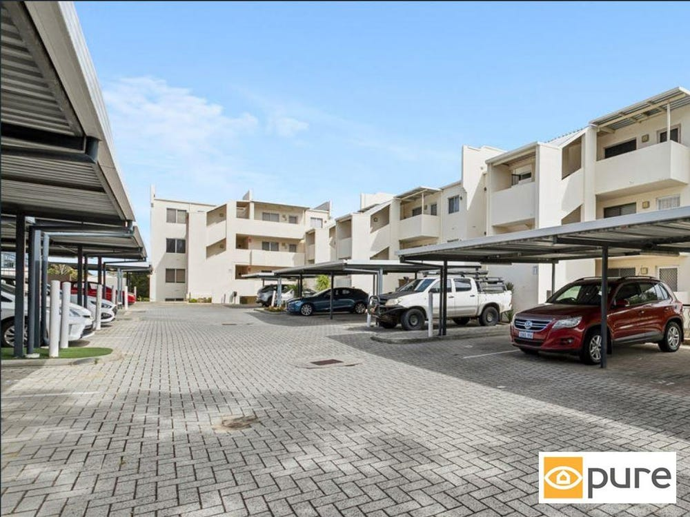

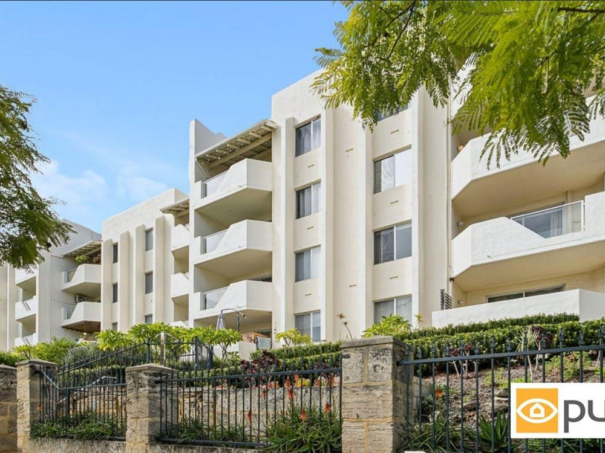


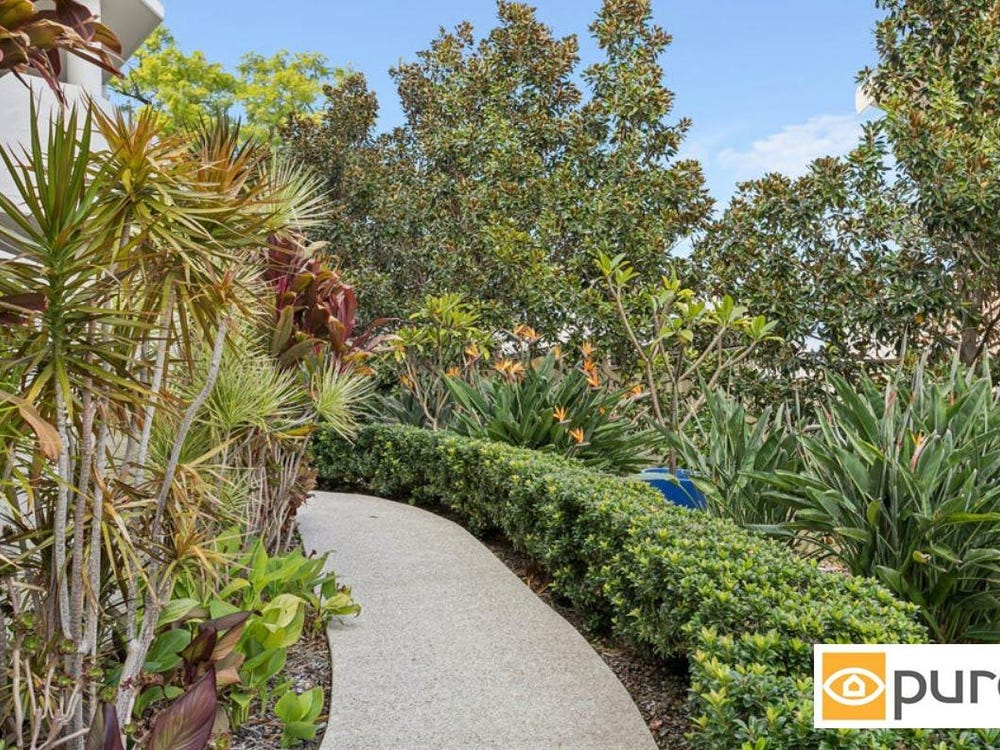


#13
$600
🚆 32분 🚶 529m 🚲 20min(5.6 km)
🚆 32분(도보 529m): 도보 0.3 km → Albany Hwy After Leonard St[960] 13정거장/25 mins → 도보 0.2 km ·무환승 · ⚡최단 28분(도보 1144m)
🛒 도보 319m 4분 (Kai Supermarket)
종합 35.7 / 64
가격5.5/10$600 — 만점10, $700=3·$500=8 선형
통근4.04/1032분 버스·무환승, 역도보 529m
마트5.41/7도보 319m 4분 (Kai Supermarket)
소음5/7Leonard Street는 Albany Hwy에서 약 80-150m 내부 골목이나 직접 면하지 않으며, Albany Hwy 소음은 어느 정도 완충됨
주차2/2주차 1대
인테리어2.75/5보통 마감(3점), 1970-80년대 벽돌 아파트 -0.25
카펫2.5/5침실 밝고 깨끗한 베이지 카펫, floor=CARP
detached1/5아파트 단지 유닛, 발코니 있음, 전용 마당 없음
감성1/3Albany Hwy 카페스트립 동네 +1, 외관·뷰 없음
안전5.5/7안전 직접 근거 없어 중립
수납1/3별도 런드리 미확인, BIW 확인
🏘 동네 — 빅토리아 파크는 Albany Hwy의 카페·레스토랑 스트립이 활기찬 젠트리피케이션 진행형 정착 동네다. Albany Hwy(960) 스트립까지 약 300m — 번화가권이되 도로 정면은 아니어서 같은 Leonard St의 9/45보다 스트립에 더 가깝고 약간 더 분주한 쪽.
✅ 좋은 점
· 960 버스 무환승으로 ECU City 32분 — CBD행 노선이 가장 직결적인 편
· Albany Hwy 스트립 300m권으로 카페·슈퍼 도보 접근성 최상급
· 사진상 주방 동선이 짧고 냉장고·오븐 포함되어 있어 furnished 매물로 초기 이사 비용 절감 가능
· 거실 공간은 소파 2조가 들어갈 정도로 확보됨
⚠️ 나쁜 점 / 체크포인트
· 전체 카펫 — 맨발 생활 BAD
· furnished 플래그: 소파·매트리스 품질이 노후 수준 — inspection 시 가구 상태 반드시 확인
· 주방 쿡탑이 코일 전기방식(구형)으로 요리 효율 낮음
· 거실 채광이 인공조명 위주로 사진에서 다소 어두워 보임
· 아파트 동내 세탁기 위치 불명 — 공용 세탁 여부 확인 필요
· 에어컨 위치 확인 필요
📐 연식·면적 — 광고에 연식·면적 없음 → 사진 추정. 천장 몰딩 있는 소형 아파트로 LDK가 일체형으로 이어지고 방 크기는 보통 수준으로 보임. 주방이 한쪽 벽에 몰린 갤리 구조로 전체 면적은 넉넉하지 않을 가능성. 정확한 면적은 inspection 확인.
💰 가격 — $600/주. Victoria Park 2베드 호가 median $650(n=10) 대비 -8%, peer 중 중하위권. (ASKING 호가 snapshot)
🆚 비교 — 같은 Leonard St의 9/45(444162636, $690, furnished, MIX바닥)와 비교: 이 매물이 $90 저렴하지만 같은 furnished+카펫 문제를 공유. 444162636은 CBD 스카이라인 전망과 라미네이트(거실)가 있어 $90 차이를 부분적으로 정당화함 — 거실 바닥을 중시하면 9/45 우위.


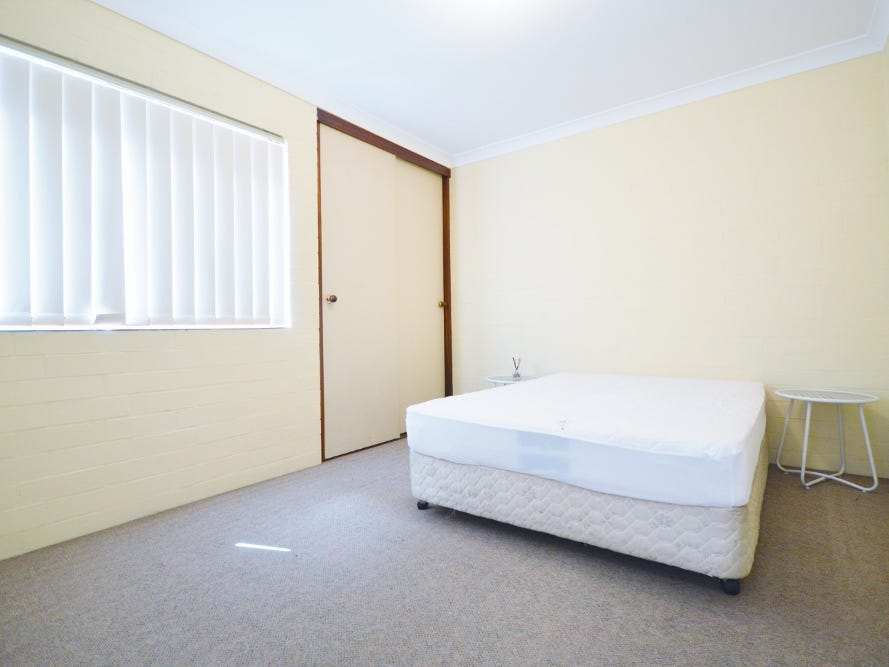
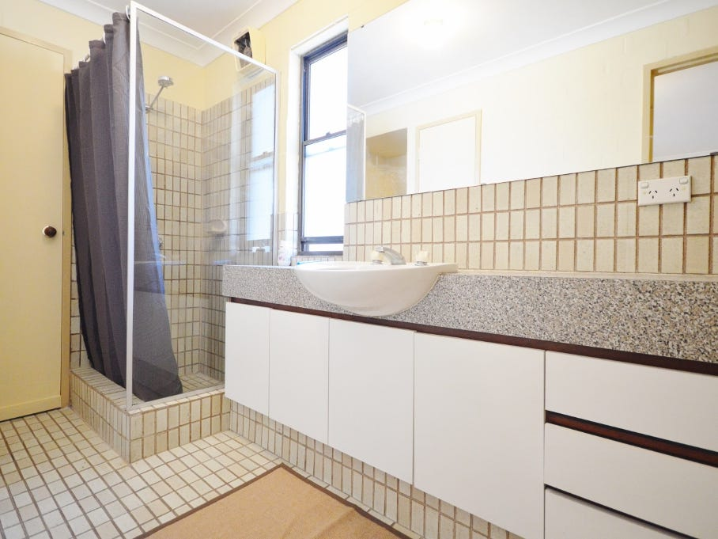
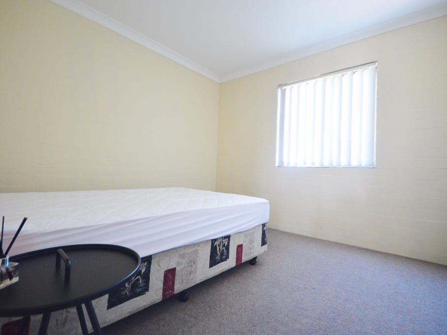
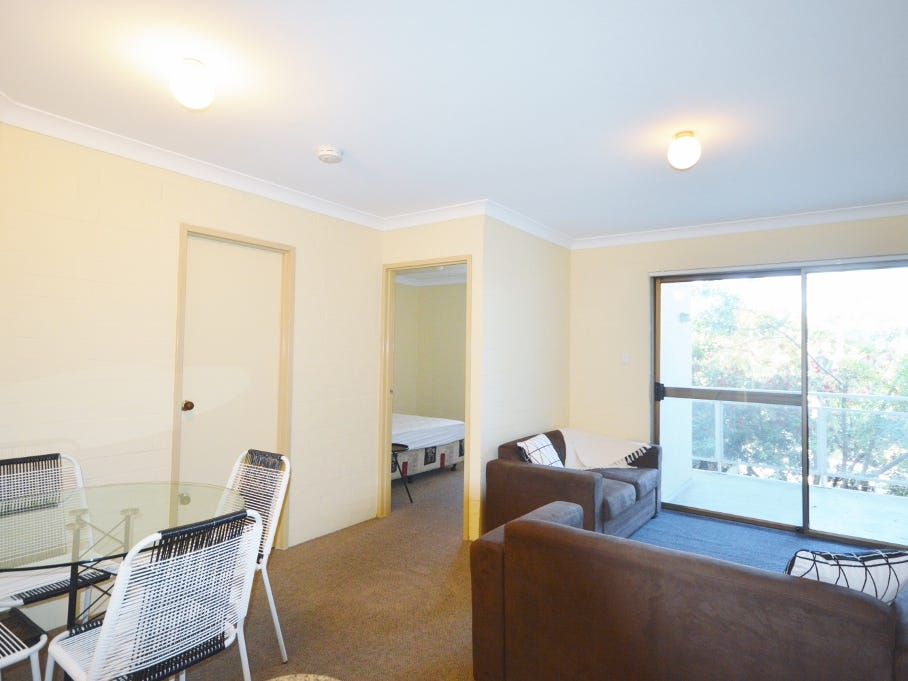


#14
$600
🚆 33분 🚶 572m 🚲 19min(5.5 km)
🚆 33분(도보 572m): 도보 0.3 km → Peninsula Rd After Joseph St[43] 19정거장/24 mins → 도보 0.3 km ·무환승
🛒 🚌 11분 (Maylands IGA, 현지도보 315m)
종합 35.4 / 64
가격5.5/10$600 — 만점10, $700=3·$500=8 선형
통근3.79/1033분 버스·무환승, 역도보 572m
마트1.32/7🚌 11분 (Maylands IGA, 현지도보 315m)
소음7/7Kirkham Hill Terrace는 Swan River 맞은편 주거 가로로 'Maylands 최고의 거리' 평가, 조용한 환경 확인
주차2/2주차 1대
인테리어3.75/5주방 흰캐비닛 모던+카펫 밝은 그레이 깨끗(마감 5), 70년대 고층 −1.25 → 3.75
카펫2.5/5floor=CARP, 밝은 그레이 카펫 깔끔 — CARP(밝고 깨끗) 2.5
detached1/510층급 고층, 발코니 강변뷰 — 발코니만
감성2/3Swan River+Crown+Optus Stadium 파노라마뷰 +1, 강변 동네 +1
안전5.5/7조용한 강변 거리, 치안 근거 없음 — 중립
수납1/3'lock-and-leave', 런드리/창고 언급 없음 — BIR만
🏘 동네 — Maylands의 젠트리피케이션은 역세권 중심이나 이 단지는 강변 쪽 조용한 포켓이다. 이 매물은 Kirkham Hill Terrace 50번지 단지의 다른 호실로, 강 쪽 조용한 버스 catchment 포켓 — 단지·위치는 동일하고 호실 단위로만 구분된다.
✅ 좋은 점
· Swan River 뷰 — 사진에서 강+CBD 스카이라인 전망 확인, 같은 단지 내 최고 조망
· 단지 내 공용 수영장(사진 확인)
· 같은 단지 내 444330156($540)·443548228($600)보다 전망 우위
· 버스 정류장 도보 0.3km
⚠️ 나쁜 점 / 체크포인트
· 전체 차콜 카펫 — 맨발 생활 BAD, peer 중 유일하게 차콜 계열 카펫
· $600으로 같은 단지 라미네이트 호(444330156, $540)보다 $60 비쌈
· 사진 5장뿐 — 주방·욕실·2번째 침실 사진 없어 상세 상태 불명
· 버스 통근 33분
· 에어컨 있으나 거실 한 대뿐인지 전실 여부 불명
📐 연식·면적 — 광고에 연식·면적 없음 → 사진 추정. 고층 배치로 추정되는 강뷰 사진, 발코니에서 조망 확인. 거실 크기는 사진상 보통이나 사진 장수 적어 방 구성 파악 제한적. 정확한 면적은 inspection 확인.
💰 가격 — $600/주. Maylands 2베드 호가 median $600(n=18) 대비 0%(median 정확히 일치), peer 중 중간가. (ASKING 호가 snapshot)
🆚 비교 — 같은 단지 다른 호 444330156($540, 라미네이트 전실)과 비교 시 이 매물은 $60 비싸고 카펫 열위. 강뷰와 수영장이 $60 프리미엄 정당화 여부는 개인 선호 문제. 맨발 생활 우선이면 444330156 선택.


#15
$640
🚆 18분 🚶 537m 🚲 10min(2.5 km)
🚆 18분(도보 537m): 도보 0.4 km → Trafalgar Rd Nile Street[Yellow CAT] 9정거장/10 mins → 도보 0.1 km ·무환승
🛒 도보 270m 4분 (IGA Local Grocer East Perth)
종합 35.1 / 64
가격4.5/10$640 — 만점10, $700=3·$500=8 선형
통근5.41/1018분 버스·무환승, 역도보 537m
마트5.65/7도보 270m 4분 (IGA Local Grocer East Perth)
소음5/7Regal Place는 막힌 골목형이나 바로 앞 IGA(도보 270m)의 아침 트럭 배송 소음이 전면 유닛에서 보고됨.
주차2/2주차 1대
인테리어2.5/5보통 마감, 1990s 추정 East Perth 아파트 -0.5
카펫2.5/5CARP — 갈색 카펫 보통 상태, 짙지 않고 오염 없음
detached1/5발코니만(오피스 빌딩뷰), 마당 없음
감성0/3발코니 뷰 오피스 빌딩, 외관 특출 아님
안전5.5/7Regal Place 내부 골목, corridor·쇠창살 근거 없음 → 중립
수납1/3별도 런드리 미언급, BIR만
🏘 동네 — East Perth는 CBD 동쪽 고밀 신개발 주거지이나, 11 Regal Place는 서비스드 아파트(단기숙박)와 장기거주 혼합 운영 단지로 알려진 곳이다. 발코니 사진에서 맞은편에 대형 오피스·상업 건물이 직면하고 공사 크레인이 보여, 뷰와 공사 소음 노출이 확인된다.
✅ 좋은 점
· IGA East Perth 도보 4분(270m) — 이번 배치 중 최단 마트 거리
· Yellow CAT 무환승 CBD 18분
· 에어컨 스플릿(거실·침실) 사진 확인
· 가구 완비 — 대형 소파, 식탁, 이지체어, TV 등 초기 정착 비용 절약
· 주차 1대 포함
⚠️ 나쁜 점 / 체크포인트
· 🔴 거실·침실 전실 카펫(짙은 갈색) — 맨발 생활 불편, 입주 전 스팀청소 요청
· 발코니 뷰 = 맞은편 대형 상업건물 직면 — 채광·프라이버시 차단
· 공사 크레인 사진 확인 — 주변 공사 소음 현재 진행 중 가능성
· 서비스드 아파트·장기거주 혼합 단지 — 단기체류자 상시 이동
· IGA 트럭 배송 소음 — 앞동 배치 시 아침 소음 리스크
· 가구 포함 — 계약 종료 시 철거 조건 확인 필수
· 주방 구형 크림 캐비닛 — 2000년대 초반 마감
📐 연식·면적 — 주방 크림 캐비닛, 타일 스타일로 2000년대 초반 준공 추정. 거실은 넓게 보이나 가구가 많아 실 면적 판단 어려움. 발코니 있음.
💰 가격 — $640/주. zone_median $610(n=21) 대비 $30 고호가. (ASKING 호가 snapshot)
🆚 비교 — #5 59/11 Regal Place $600 MIX(East Perth): 동일 단지 다른 호수가 $40 저렴, MIX 바닥 — 먼저 #5를 보고 이 매물 선택 근거 확인 필요. #3 11/130 Terrace Road $600 BARE(Perth): $40 저렴하고 하드우드, 통근 17분 — 전반적으로 우위.
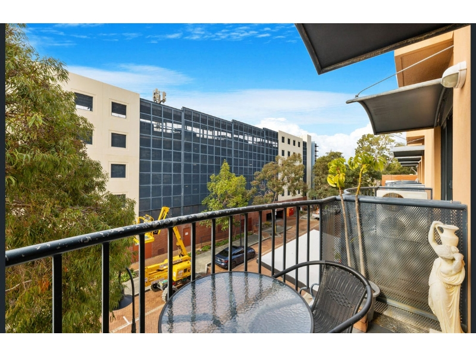
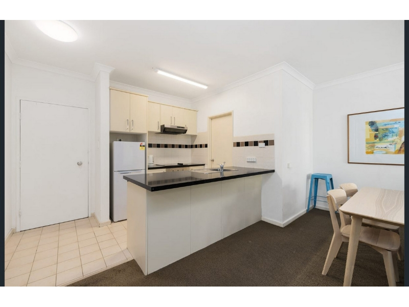


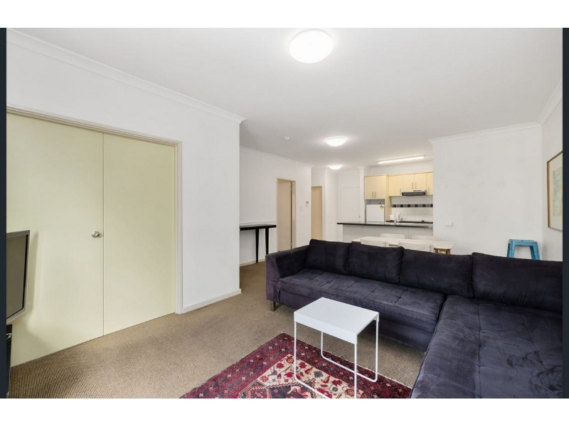
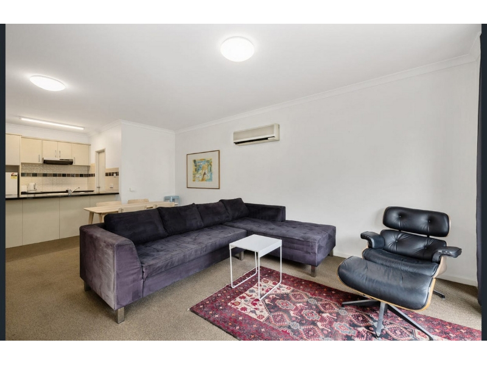
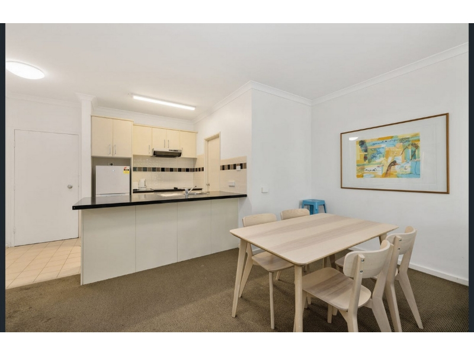


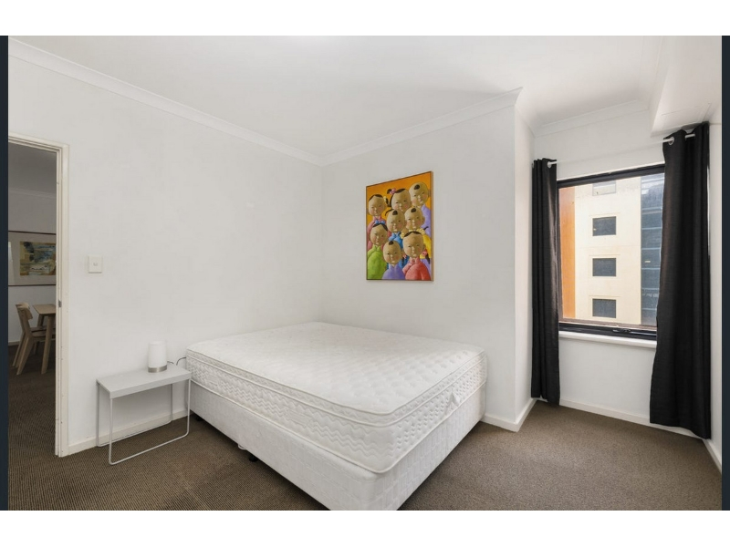


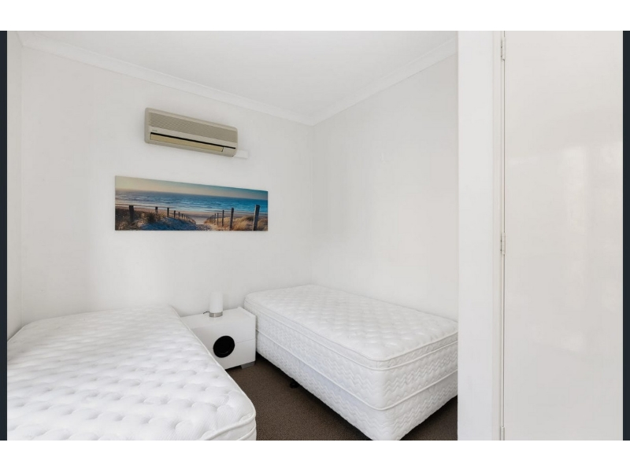


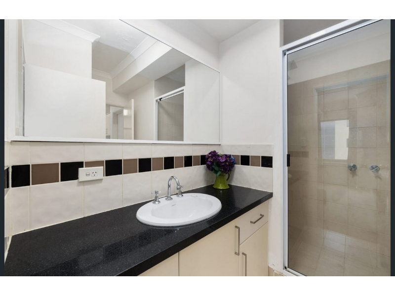

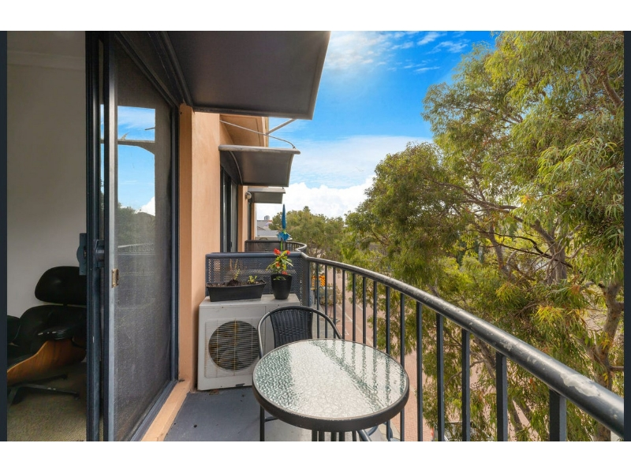


#16
$630
🚆 34분 환승 🚶 562m 🚲 24min(6.4 km)
🚆 34분(도보 562m): 도보 0.3 km → Labouchere Rd After Gardner St[31] 10정거장/20 mins → 도보 0.2 km → Wellington St Arena[Yellow CAT] 1정거장/2 mins → 도보 55 m ·환승1회
🛒 도보 754m 11분 (Preston Street IGA)
종합 34.5 / 64
가격4.75/10$630 — 만점10, $700=3·$500=8 선형
통근2.73/1034분 버스·환승1회, 역도보 562m
마트3.23/7도보 754m 11분 (Preston Street IGA)
소음7/7Gardner Street는 Como의 나무 많은 주거 골목(tree-lined street)으로 검색 확인, 간선도로에 면하지 않음
주차2/2주차 1대
인테리어1.25/5낡음 마감(1.5), 복숭아색 욕실+핑크 카펫+구형 주방, 1970-80년대 -0.25
카펫3.5/5거실 핑크-베이지 카펫+주방 타일, floor=MIX
detached1/5아파트 단지 유닛, 공용 조경 정원, 발코니 있음
감성2/3초록 정원+조용한 단지 +1, Como 나무 많은 동네 +1
안전6.0/7Gardner Street 조용한 주거 골목 +0.5
수납1/3description 'Storage Room' 확인, 런드리 별도 명시 없음 — 1점
🏘 동네 — Como는 Swan River 포어쇼어와 Canning Bridge 철도 양쪽을 모두 품은 나무 많은 정착형 중산층 주거지로, 조용한 주택가 골목이 주를 이룬다. 15 Gardner St는 Crystal Court라는 이름의 저층 워크업 단지로, 정원과 녹음이 사진으로 확인되며 조용한 주택가 분위기가 실제로 검증된다.
✅ 좋은 점
· 조용한 주거 골목 — Gardner St는 나무 많은 골목, 사진으로 녹음 확인
· 가구 완비 — 소파, 식탁, 침대, 냉장고 포함으로 초기 정착 비용 절약
· 주방 바닥 LVP — 카펫 대비 청소 쉬움
· Preston Street IGA 도보 11분(754m)
· 주차 1대 포함
· 버스로 CBD 34분 접근(Canning Bridge 환승)
⚠️ 나쁜 점 / 체크포인트
· 🔴 거실·침실 전실 카펫 — 맨발 생활 불편, 입주 전 스팀청소 요청
· 욕실·화장실 매우 낡음 — 수조식 구형 변기, 벽걸이 온수기, 욕조만 있고 샤워부스 없음, 크림 타일 전체
· 주방 구형 코일 쿡탑 — 화력 약하고 청소 불편
· 가구 포함 — 계약 종료 시 철거 조건 확인 필수
· 통근 34분(환승 1회) — 이번 배치 내 느린 편
· 건물 연식 1980-90년대 추정
📐 연식·면적 — 외관 사진에서 2층 워크업 벽돌 단지(Crystal Court) 확인. 1980년대 준공 추정. 전형적인 로우라이즈 워크업 구조.
💰 가격 — $630/주. zone_median $610(n=21) 대비 $20 고호가. 낡은 컨디션·긴 통근 감안 시 고평가된 매물. (ASKING 호가 snapshot)
🆚 비교 — #1 5/51 Tate St $590 BARE(West Leederville): $40 저렴하고 하드우드, 통근 25분 — 체급 차이. #15 401/45 Adelaide Tce $590 MIX(East Perth): $40 저렴하고 통근 21분 — 이 매물보다 전반적으로 우위. #10 108/122 Brown St $630 CARP(East Perth): 같은 가격인데 통근 15분, 신축 모던 — 이 매물 대비 체급 열세 명확.


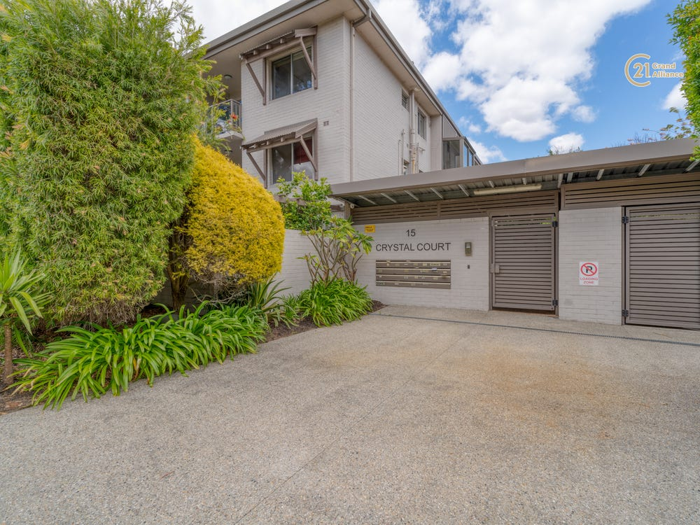


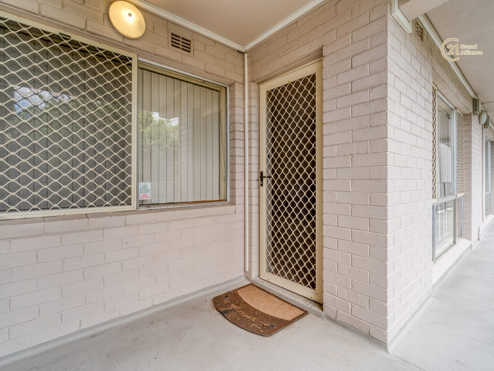


#17
$600
🚆 33분 🚶 572m 🚲 19min(5.5 km)
🚆 33분(도보 572m): 도보 0.3 km → Peninsula Rd After Joseph St[43] 19정거장/24 mins → 도보 0.3 km ·무환승
🛒 🚌 11분 (Maylands IGA, 현지도보 315m)
종합 34.1 / 64
가격5.5/10$600 — 만점10, $700=3·$500=8 선형
통근3.79/1033분 버스·무환승, 역도보 572m
마트1.32/7🚌 11분 (Maylands IGA, 현지도보 315m)
소음7/7Kirkham Hill Terrace 50번지는 Swan River 맞은편 조용한 강변 주거 가로 확인
주차2/2주차 1대
인테리어1.5/5거실 카펫+낡은 인테리어, 주방 70년대 electric coil 낡음(1.5), 욕실 현대식 감안 1.5
카펫2.5/5floor=CARP, 밝은 베이지-그레이 카펫(짙음 아님) — 2.5
detached1/5Kirkham 동일 단지 34호(낮은 층), 발코니만
감성1/3강변 단지 동네 +1, 34호 층 낮아 뷰 제한적, 외관 낡음
안전5.5/7조용한 강변 가로, 치안 근거 없음 — 중립
수납3/3description 'Storage Room' 명시 + 창고 확인 → 3점
🏘 동네 — Maylands는 인너시티 젠트리피케이션 진행 교외로 강변과 역세권이 공존한다. 이 매물은 역시 Kirkham Hill Terrace 50번지 단지 매물로, 강 쪽 버스 포켓 내 같은 건물이며 위 두 호실(444330156, 444301616)과 사실상 동일한 입지다.
✅ 좋은 점
· 같은 단지(50번지)로 Swan River 쪽 조용한 환경 공유
· 단지 공용 수영장 접근 가능(단지 내 포함 시)
· 버스 정류장 도보 0.3km
· 입주 중 상태로 촬영 — 실거주 공간감 파악 가능
⚠️ 나쁜 점 / 체크포인트
· 전체 카펫(CARP) — 맨발 생활 BAD
· 컨디션 낡음 — 벽돌 노출 구형 인테리어, 전반 연식 느껴짐
· $600으로 같은 단지 444330156($540, 라미네이트)보다 $60 비싸면서 컨디션·바닥 열위
· 입주 중 촬영으로 사진상 상태 정확한 판단 어려움 — 공실 상태 재확인 필요
· 버스 통근 33분
· 에어컨 유무 미확인
📐 연식·면적 — 광고에 연식·면적 없음 → 사진 추정. 벽돌 노출 구형 인테리어, 침실은 더블 침대 배치 가능하나 좁아 보이는 편. 거실 공간은 표준적. 정확한 면적은 inspection 확인.
💰 가격 — $600/주. Maylands 2베드 호가 median $600(n=18) 대비 0%(median 일치), peer 중 중간가. (ASKING 호가 snapshot)
🆚 비교 — 같은 단지 내 444330156($540, 라미네이트 전실, 모던 컨디션)과 비교 시 이 매물은 $60 비싸고 카펫·낡은 컨디션으로 두 항목 모두 열위. 합리적 선택 기준에서 같은 단지라면 444330156이 우위.


#18
$590
🚆 21분 🚶 439m 🚲 10min(2.5 km)
🚆 21분(도보 439m): 도보 0.2 km → Adelaide Tce Westend Causeway[960] 9정거장/15 mins → 도보 0.2 km ·무환승 · ⚡최단 19분(도보 670m)
🛒 도보 277m 4분 (Foodies Market IGA Langley Park East Perth)
종합 33.6 / 64
가격5.75/10$590 — 만점10, $700=3·$500=8 선형
통근5.44/1021분 버스·무환승, 역도보 439m
마트5.62/7도보 277m 4분 (Foodies Market IGA Langley Park East Perth)
소음3/7Adelaide Terrace는 CBD 연결 주요 간선도로에 직면, 401호(4층)이나 도로 직면 위치
주차0/2주차 0대
인테리어1.75/5거실 짙은 카펫+계단, 주방 보통, 70년대 붉은벽돌 고층 −1.25 → 1.75
카펫3.5/5floor=MIX, 거실 짙은 카펫+주방 타일 — MIX 3.5
detached1/57층급 고층 아파트, 전용 마당 없음
감성0/3오래된 간선 면 벽돌 단지, 특출한 감성 없음
안전6.5/7description 'secure complex with lift' + gated 주차 → 보안게이트 +1
수납1/3주방 내 세탁기 내장, 별도 런드리룸 아님 — BIR만
🏘 동네 — East Perth는 CBD와 Swan River 사이에 낀 인너시티 거주 구역으로, 강변 Langley Park 산책로와 Adelaide Terrace 간선도로가 경계를 이루는 아파트 밀집 지역이다. 이 매물은 45 Adelaide Terrace로 Langley Park와 Swan River 바로 코앞 — 강변 조깅로·잔디밭 도보 50m 거리의 리버사이드 프런트 포켓이다.
✅ 좋은 점
· 자전거 통근 10분 — 이 가격대에서 자전거 접근 최강
· IGA 도보 4분(277m) — 장보기 편의 최상
· 버스 통근 21분(무환승) + CAT 무료버스 도보권 — CBD 이동 옵션 다양
· 가스레인지(5구) 확인 — 요리 기능 우수
· 주방 내 세탁기 내장 — 세탁 동선 실용적
· Langley Park·Swan River 강변 도보 즉시
· 4층(401호) 배치
⚠️ 나쁜 점 / 체크포인트
· 🔴 거실 전실 다크 카펫 — 맨발 생활 BAD
· 🔊 Adelaide Terrace 간선도로 정면 — 차량·버스 통과 소음 상시
· 주차 없음 — 차 있으면 별도 주차 비용 발생
· 2번째 베드룸이 사실상 '닫힌 발코니' 전환형 — 독립 침실이 아닐 수 있음, inspection 필수
· 세탁기가 주방 공간 내 배치 — 동선 혼재
📐 연식·면적 — 광고 기재 없음 → 사진 추정. 대형 5-6층 단지, 1990년대 중반 건설 추정. 거실+조리 공간 결합형으로 전체 면적은 보통. 침실1은 더블, 침실2(발코니형)는 싱글 크기.
💰 가격 — $590/주. West Leederville 1위 매물 444356216($590, 하드우드 전실)과 가격 동일. (ASKING 호가 snapshot)
🆚 비교 — 동가($590)인 1위 444356216(5/51 Tate St, 하드우드 전실, 통근 25분)과 비교 시 이 매물은 통근 21분(버스) + 자전거 10분으로 더 빠르나 거실 카펫·주차 없음·Adelaide Tce 소음이 상쇄. East Perth 444246968($600, 가구포함, 통근 18분)과 비교 시 $10 저렴하지만 카펫 동급이고 444246968은 에어컨·가구 포함+18분 단통근으로 실사용 우위.


#19
$700
🚆 14분 🚶 420m 🚲 9min(2.1 km)
🚆 14분(도보 420m): 도보 0.3 km → Wellington St Old Girls School[Yellow CAT] 7정거장/8 mins → 도보 0.1 km ·무환승
🛒 도보 468m 6분 (Carlton Fresh)
종합 33.4 / 64
가격3.0/10$700 — 만점10, $700=3·$500=8 선형
통근6.2/1014분 버스·무환승, 역도보 420m
마트4.66/7도보 468m 6분 (Carlton Fresh)
소음3/7Wellington Street는 Perth CBD 북측 주요 동서 간선도로(3.7km)이며 동서 교통량 상존. 위키피디아에서 'primary east-west street'로 명시.
주차2/2주차 1대
인테리어1.5/5낡음=1.5, 1990s 벽돌 단지, 새 페인트+카펫 부분 리노이나 kitchen·욕실 낡음 유지
카펫2.5/5CARP — 'fresh carpets', 새 회색 카펫 밝고 깨끗
detached2/5'private courtyard' description, 슬라이딩도어 뒤 전용 courtyard 1층
감성1/3Wellington Court 흰 스터코 외관 클래식 특출 +1, 동네·뷰 무난
안전6.5/7사진 01 보안 철제게이트(Wellington Court 입구) +1, corridor 해당 없음
수납1/3런드리 미확인, BIR 미확인, 오픈 선반만 → 1점
🏘 동네 — East Perth는 Perth CBD 동쪽 바로 옆 인너시티 구역으로, Wellington Square 재개발·Claisebrook Cove 수변 공간이 활발히 조성 중인 빠르게 변화하는 동네다. 이 매물은 Wellington Street 23번지 — Yellow CAT 무료 버스 정류장이 문 앞에 있어 CBD까지 14분(본 목록 최단) 연결되는 최우수 통근 포켓이다. 단 Wellington Street 자체가 동서 간선도로로 상시 교통 소음이 존재하고, 인근 공사도 진행 중이다.
✅ 좋은 점
· Yellow CAT 무료 버스 바로 앞 — CBD 통근 14분, 본 목록 peer 최단
· 안뜰(courtyard) 접근 — 슬라이딩 도어로 1층 세미 외부 공간
· 단지 보안 게이트 입구
· 마트 도보 468m(Carlton Fresh)
· 신규 카펫+새로 도색 완료 — 입주 직전 리프레시 상태
⚠️ 나쁜 점 / 체크포인트
· 🔴 전실 카펫(베이지-회색 신규) — 맨발 생활 BAD
· 주방 전기 코일쿡탑 + 구형 기기 — 리모델 없음
· 🔊 Wellington Street 간선도로 소음 상시, Wellington Square 인근 공사 소음 가능성
· $700으로 East Perth peer 중 최고가, 바닥재 가치 대비 높음
· 세탁기/건조기가 작은 hallway laundry에 통합 — 공간 협소
📐 연식·면적 — 사진 추정: 1990년대 중반 3층 벽돌 단지. 거실 오픈플랜+안뜰 연결로 공간감 양호. 침실 2개 더블 가능 크기.
💰 가격 — $700/주. East Perth 2베드 peer 중 가장 비싼 가격(peer 범위 $590-700). Yellow CAT 최단 통근 프리미엄으로 추정. (ASKING 호가 snapshot)
🆚 비교 — #5 59/11 Regal Place $600 MIX(East Perth): $100 저렴하고 통근 4분 차이 — 간선 소음 없고 가격 훨씬 합리적. 이 매물의 14분 통근 가치가 $100 차이를 정당화하기 어려움. #3 11/130 Terrace Road $600 BARE(Perth): $100 저렴하고 하드우드 전실, 통근 17분 — 거의 전 항목에서 우위.


#20
$650
🚆 42분 환승 🚶 879m 🚲 23min(6.5 km)
🚆 42분(도보 879m): 도보 0.6 km → Mill Point Rd After Hovia Tce[32] 5정거장/12 mins → 도보 56 m → Adelaide Tce Westend Causeway[960] 9정거장/15 mins → 도보 0.2 km ·환승1회
🛒 🚌 26분 (Foodies Market IGA Langley Park East Perth, 현지도보 357m)
종합 32.9 / 64
가격4.25/10$650 — 만점10, $700=3·$500=8 선형
통근0.87/1042분 버스·환승1회, 역도보 879m
마트0/7🚌 26분 (Foodies Market IGA Langley Park East Perth, 현지도보 357m)
소음7/7Manning Terrace는 Swan River 포어쇼어 변의 막힌 형태 주거 테라스로, 여러 매물 설명에서 'quiet street' 반복 확인.
주차2/2주차 1대
인테리어3.75/51970s 벽돌 단지, 내부 모던 리노(subway tile kitchen, dishwasher, 새 마루) → 70년대 풀리노 ≈ 3.75
카펫3.5/5MIX — 주방·거실 hardfloor, 침실 밝은 베이지 카펫
detached1/5covered 발코니, 마당 없음
감성1/3Manning Terrace Swan River 포레쇼어 인접 동네 +1, 외관·시티뷰 없음
안전6.5/7'secure riverside complex' 보안게이트(description) +1, 조용한 Manning Terrace +0.5 → 보수 적용 6.5
수납3/3발코니 covered 전용 세탁기 공간, 팬트리 도어 확인 → 전용런드리+팬트리 3점
🏘 동네 — South Perth는 Swan River 강변과 Mends St 페리·포어쇼어를 끼고 발달한 정착형 고급 주거지로, 강변 Mill Point Rd 아파트 밴드가 핵심이다. 이 매물은 Manning Terrace에 위치 — 강변 코어(Mill Point Rd)에서 한 골목 안쪽으로, 단지 내 공용 수영장·테니스코트가 있는 소규모 리조트형 단지에 속한다.
✅ 좋은 점
· 단지 내 공용 수영장 + 테니스코트 확인
· 발코니에서 녹지 조망 — 조용한 방향의 외부 공간
· 에어컨(마스터 베드룸 스플릿) + 실링팬 2대 확인
· 욕실 화이트 캐비닛+샤워부스, 기능 충족
· 복도·입구 라미네이트 바닥 확인
· Manning Terrace 조용한 막힌 형태 주거 골목
⚠️ 나쁜 점 / 체크포인트
· 🔴 거실·침실 전체 다크 카펫 — 맨발 생활 BAD
· 6개월 단기 임대만 — 장기 거주 불가, 이사 리스크 내재
· 통근 42분(버스 환승 1회) — peer 그룹 내 최장 통근
· 세탁기가 발코니(외장 공간)에 노출 설치
· 마트 버스 26분 의존 — 도보 마트 없음
📐 연식·면적 — 사진 추정: 1970-80년대 베이지 벽돌 저층 단지, 2층 배치. 거실+주방 오픈플랜으로 실용적 면적. 침실 2개 모두 더블 침대 충분한 크기.
💰 가격 — $650/주. South Perth 2베드 호가 median $750(n=15) 대비 -13%, 그룹 내 최저가. 단기(6개월)이 할인의 주요 이유로 추정. (ASKING 호가 snapshot)
🆚 비교 — 강변 코어 12/154 Mill Point Rd($600, 카펫, 통근 26분)와 비교 시 이 매물은 $50 비싸고 통근도 더 길며 카펫 동등 — 수영장·테니스코트 어메니티가 유일한 상대적 이점. 4위 매물 22/89 Mill Point Rd($580, 거실 라미네이트, 통근 23분)과 비교 시 모든 면에서 열세.


#21
$600
🚆 26분 🚶 493m 🚲 18min(4.5 km)
🚆 26분(도보 493m): 도보 0.2 km → Mill Point Rd Before Parker St[34] 3정거장/19 mins → 도보 0.3 km ·무환승
🛒 도보 690m 9분 (South Perth Fresh IGA)
종합 32.6 / 64
가격5.5/10$600 — 만점10, $700=3·$500=8 선형
통근4.76/1026분 버스·무환승, 역도보 493m
마트3.55/7도보 690m 9분 (South Perth Fresh IGA)
소음3/7Mill Point Road는 버스 34번이 다니는 왕복 4차선 간선 도로이며 매물 주소가 이 도로에 직접 면함
주차2/2주차 1대
인테리어2.75/5보통 마감(3점), 1970년대 South Perth 강변 아파트 추정 -0.25
카펫1.5/5이미지에서 짙은 네이비/차콜 카펫 확인
detached1/5강변 공용 아파트 단지, 전용 마당 없음, 발코니만
감성2/3South Perth 강변 동네 +1, Mill Point Rd 리버뷰 가능 +1
안전5.5/7위험 동네·술집·철창·보안게이트 근거 없어 중립
수납1/3별도 런드리 미확인, BIW만
🏘 동네 — South Perth는 Swan River 강변을 끼고 Mends St 페리 권역을 중심으로 형성된 정착형 고급 주거지로, 시내 직장인·다운사이저 등 안정적 거주층이 많다. 이 매물은 Mill Point Rd(154번지) 강변 코어에 위치 — 본 그룹에서 가장 정착·선호되는 Swan River·Mends St 페리 권역이며, 아래 433510954(52호)와 동일 건물이지만 주당 $600으로 더 저렴한 호실.
✅ 좋은 점
· 발코니 있음 — 사진에서 거실-주방 구분 공간과 발코니 출입 확인
· 거실 쪽 창이 넓고 채광 유입 가능성 있음(2장째 사진 기준 측창 존재)
· 강변 코어 입지 — Mends St 페리·버스 34 무환승으로 ECU City 26분
· 주방 라미네이트 바닥 부분 존재(1장째 사진) — 주방 동선만큼은 맨발 가능
· 욕조 있음
⚠️ 나쁜 점 / 체크포인트
· 전체적으로 짙은 네이비 카펫 — 거실·침실 전반에 깔려 있어 맨발 생활 BAD
· 사진이 2020년 12월 촬영본 — 현재 상태와 6년 가까이 차이. 입주 전 실제 컨디션 반드시 현장 확인 필요
· 주방 좁고 ㄱ자 갤리형, 수납 한정적
· 에어컨 범위 광고에 명시 없음 — inspection 시 확인
· 건물 외관·복도 등 공용부 연식 구축으로 추정 — 관리 상태 확인 필요
📐 연식·면적 — 광고에 연식·면적(m²) 없음 → 사진 추정. 거실과 주방이 분리된 구조로 LDK 합산 공간감은 중간 수준, 카펫 낀 거실은 공간이 비교적 넓어 보이나 창 크기상 채광은 제한적일 가능성. 방 크기는 보통 수준으로 보임. 정확한 면적은 inspection 확인.
💰 가격 — $600/주. South Perth 2베드 호가 median $750(n=15) 대비 -20%. 본 그룹 5건 중 최저가. (ASKING 호가 snapshot)
🆚 비교 — 같은 건물(154 Mill Point Rd) 52호인 433510954($680)와 직접 비교. 두 매물은 위치·버스·통근(둘 다 26분)이 동일. 차이는 $80/주 가격과 furnished(52호는 가구포함) 조건뿐. 가구 불필요하다면 이 호실이 명확히 유리하나, 카펫 전체 + 구사진 문제는 동일하게 안고 간다.


#22
$600
🚆 33분 환승 🚶 643m 🚲 30min(8.1 km)
🚆 33분(도보 643m): 도보 0.3 km → Sutherland St After Halliday St[41] 4정거장/5 mins → 도보 0.1 km → Bayswater[Airport Line] 7정거장/14 mins → 도보 0.3 km ·환승1회
🛒 🚌 19분 (IGA Local Grocer Bayswater, 현지도보 197m)
종합 32.4 / 64
가격5.5/10$600 — 만점10, $700=3·$500=8 선형
통근0.56/1033분 기차·환승1회, 역도보 643m · 자전거30분+(−3)
마트1.12/7🚌 19분 (IGA Local Grocer Bayswater, 현지도보 197m)
소음5/7King William Street는 Bayswater 내 비교적 넓은 간선 도로이나 역과 1.4km 거리로 철로 직접 소음권 밖. 도로 교통 소음은 있음.
주차2/2주차 1대
인테리어1.75/5보통(3) − 1978년 1970s연식(−1.25). 바닥·페인트 교체했으나 주방(img05·06·07) 오리지널 1978년 캐비닛.
카펫5/5BARE — 전체 새 라미네이트 설치 확인(img01~04, 08~10). 카펫 없음.
detached3/5'villa' 복합단지. img13·14 전용 카포트+커버드 파티오. 마당 있으나 공유 벽 → 3점.
감성0/3평범한 벽돌 빌라 단지. 외관·뷰 특이점 없음.
안전5.5/7corridor 아님. 쇠창살 없음. 골목 막힘 근거 불충분 → 기본 5.5.
수납3/3img12 독립 런드리룸(통+배수+수전) + 루버 도어 수납장(창고) 확인 → 전용런드리+창고 3점.
🏘 동네 — Bayswater는 CBD 북동 7km Swan River 변의 젊은 프로페셔널 동네로 King William Street 크래프트 브루어리·카페 젠트리피케이션이 진행 중이다. 23/104 King William Street는 1978년 구형 복합단지이나 King William St 상권과 도보 연결되는 위치이며, IGA까지 버스 의존(19분)으로 같은 Bayswater라도 상점가와 거리가 있는 포켓이다.
✅ 좋은 점
· 🟢 전 구역 밝은 회색 라미네이트 — 맨발 OK, 사진상 카펫 없음 전 구역 확인
· 욕실 흰색으로 교체·청결 양호 (사진상 확인)
· 뒤뜰 파티오+창고 있음
· 세탁실 독립
· Bayswater 젠트리피케이션 동네 — 카페·브루어리 도보 생활권
· 통근 33분(C존 최단급)
⚠️ 나쁜 점 / 체크포인트
· Bayswater C존 외곽 — IGA까지 버스 19분, 장보기 버스 의존
· 주방 마감 구형 — 연갈색 캐비닛+패턴 타일 백스플래시, 전기 코일 렌지. 1978년 수준
· King William St 도로 교통 소음 지속 유입 (소음 보통)
· 1978년 51세대 구형 단지 — 방음·단열 제한적
· 스테인리스 싱크+구형 수전 — 노후
· 사진에 침실 사진 없음 — 침실 상태 미확인
📐 연식·면적 — 1978년 단층 빌라 복합단지. 거실 전 구역 라미네이트는 비교적 최근 교체로 보이나 주방은 원형 유지 수준. 욕실은 흰색 교체 확인. 뒤뜰+파티오 공간이 있어 유닛 대비 생활 여유 있음.
💰 가격 — $600/주. zone_median $575(n=7) 대비 $25 비쌈. 통근 시간·라미네이트 강점이 있으나 마트 버스 의존이 상쇄. (ASKING 호가 snapshot)
🆚 비교 — #18 Rivervale($560, 34분)보다 $40 비싸고 통근 1분 단축 — 라미네이트 동급인데 가격 불리. #17 Fremantle($600, 60분)과 동가인데 통근 27분 단축이 결정적 우위. Armadale 2개 매물보다 통근 20분 이상 단축되나 $25-50 비쌈 — 통근 감수 불가라면 이 배치 C존 최선.


#23
$620
🚆 21분 환승 🚶 386m 🚲 27min(7.6 km)
🚆 21분(도보 386m): 도보 40 m → Canning Hwy Before Cale St[910] 2정거장/3 mins → 도보 18 m → Canning Bridge Station[Mandurah Line] 2정거장/8 mins → 도보 0.3 km ·환승1회
🛒 도보 1126m 15분 (Preston Street IGA)
종합 32.2 / 64
가격5.0/10$620 — 만점10, $700=3·$500=8 선형
통근5.61/1021분 기차·환승1회, 역도보 386m
마트1.37/7도보 1126m 15분 (Preston Street IGA)
소음3/7주소가 Canning Highway 427번지로 4차선 간선도로에 직접 면하며, Canning Hwy는 고속도로 수준 교통량의 대표적 소음 도로
주차2/2주차 1대
인테리어2.75/5보통 마감(3점), 새 키친·욕실 바니티, 1970-80년대 -0.25
카펫3.5/5description 새 카펫+새 플로어링, MIX
detached1/5Canning Hwy 직면 아파트, 발코니만
감성1/3Como 나무 많은 동네 +1, 철창 있어 외관 특출 없음
안전5.0/7이미지 01·05 창문 두꺼운 쇠창살 확인 -0.5
수납2/3description 'kitchen and laundry' — 런드리 존재
🏘 동네 — Como는 Swan River 강변과 Canning Bridge 환승 축 사이, 나무 많고 정착된 중산층 주거지다. 이 매물은 정류장까지 단 40m로 사실상 Canning Highway에 정면으로 접해 있어 5개 중 가장 시끄럽고 번잡하지만, Canning Bridge 환승 철도 접근은 가장 빠른 축에 속한다.
✅ 좋은 점
· 거실 라미네이트(밝은 오크, 맨발 OK) — 사진상 넓고 밝은 오크색 라미네이트가 거실 전체를 커버하고 있음
· 거실 창이 크고 그린 캐노피 전망 — leafy outlook으로 채광과 시각적 개방감 우수
· 거실에 벽걸이 에어컨(스플릿) 확인
· 통근 21분(버스+Mandurah선), 도보 40m로 5건 중 최단 통근
· 욕실 리노베이션 완료(브리프 기재)
⚠️ 나쁜 점 / 체크포인트
· 침실 카펫(flag: YEL) — 맨발 생활자에게 비선호
· Canning Highway 정면이라 소음·진동 가능성 높음 — 방음 확인 필수
· 주방이 미리노베이션 상태 — 사진상 상부장이 오래된 원목 프레임 오픈 선반 형태로 수납 기능 제한적이고 시대감이 있음, 카운터탑도 구형 목재 패턴. 거실 대비 주방 컨디션 격차 있음
· 주방 조리기기가 코일 전기레인지(구형) — 인덕션 대비 청소·효율 불리
· 에어컨이 거실만인지 침실 포함인지 사진 4장으로 미확인 — 침실 에어컨 유무 현장 확인 필수
· 컨디션 '보통' — 건물 외관 구축, 공용 복도 상태 확인 필요
📐 연식·면적 — 광고에 연식·면적(m²) 없음 → 사진 추정. 거실이 정사각형에 가까운 넉넉한 크기이며 창이 커서 공간감이 좋다. 주방은 독립형으로 거실과 분리된 구조. 정확한 면적은 inspection 확인.
💰 가격 — $620/주. Como 2베드 호가 median $710(n=8) 대비 -13%, peer 5건 중 2번째로 저렴한 2베드. (ASKING 호가 snapshot)
🆚 비교 — 같은 Como peer 444338200($530/Baldwin St)과 비교: 이 매물은 $90 더 비싸지만 거실이 더 넓고 leafy outlook과 에어컨이 확인되며 통근이 4분 단축(21분 vs 25분). 반면 Baldwin St는 골목 안쪽이라 소음이 낮고 주방 리노가 더 현대적. 소음 민감도가 높다면 Baldwin St 우위; 통근 최소화와 채광을 우선하면 이 매물 우위.


#24
$560
🚆 34분 환승 🚶 1109m 🚲 23min(6.3 km)
🚆 34분(도보 1109m): 도보 0.5 km → Great Eastern Hwy After Kooyong Rd[940] 2정거장/3 mins → 도보 0.4 km → Burswood[Thornlie-Cockburn Line] 4정거장/9 mins → 도보 0.3 km ·환승1회
🛒 도보 550m 8분 (IGA Local Grocer Eastgate)
종합 31.9 / 64
가격6.5/10$560 — 만점10, $700=3·$500=8 선형
통근1.9/1034분 기차·환승1회, 역도보 1109m
마트4.25/7도보 550m 8분 (IGA Local Grocer Eastgate)
소음3/754 Nannine Place는 Great Eastern Highway에서 100-200m 이내에 위치하며 현 세입자 후기에서 소음 의식 세입자에게 상층 권고 언급.
주차0/2주차 0대
인테리어1.75/5보통(3) − 1970s연식(−1.25). Riverlux Villas 1970년대 브릭(img03). 거실 BARE, 주방 오래된 가스레인지 유닛, 욕실 노후.
카펫5/5BARE — 거실 나무 바닥, 침실도 바닥재(img09 확인) → 5점.
detached1/5img03 'RIVERLUX VILLAS' 2층 아파트 블록. img12 플로어플랜 발코니만, 전용마당 없음 → 1점.
감성1/3img05 발코니에서 Perth CBD 스카이라인 원경 → 뷰(시티) +1.
안전6.5/7corridor 아님. 보안게이트 확인(img01 블랙 스피어 철제 게이트) +1 → 6.5.
수납1/3img12 'BATHROOM & LAUNDRY' 합실 = 독립 런드리 아님. img11 빌트인 워드롭 → BIW만 1점.
🏘 동네 — Rivervale은 CBD 동쪽 5km 이너이스트 교외로 Crown Perth 복합단지·IGA Eastgate가 생활권이며 median age 34의 젊은 층 비중이 높다. 54 Nannine Place는 Riverlux Villas라는 1970년대 구형 복합단지로, Great Eastern Highway 바로 남쪽에 붙어 있어 저층 유닛의 고속도로 소음 노출이 이 주소의 핵심 단점이다.
✅ 좋은 점
· 🟢 전 구역 라미네이트(밝은 오크) — 맨발 OK, 사진상 카펫 없음 확인
· 통근 34분(C존 최단 수준) — 환승 포함이나 비교적 빠름
· IGA Eastgate 도보 8분(550m) — 장보기 접근 무난
· CBD 스카이라인 뷰 — 상층 확인
· 거실+주방 오픈 플랜, 밝고 쾌적한 느낌
· 보안 게이트 단지
⚠️ 나쁜 점 / 체크포인트
· 🔊 Great Eastern Highway 고속도로 소음 — 저층 유닛 상시 노출, 217호 층수 미확인(층 높을수록 완충)
· Rivervale C존 외곽 — 강·고속도로 분리로 자전거 통근 23분, 도보 비현실적
· FIFO 단기 거주 비중 높은 단지 특성 — 커뮤니티 안정성 낮음
· 1970년대 구형 복합단지 — 방음·단열 성능 제한적
· 주차 없음(0대) — 차량 보유 시 별도 주선 필요
· 사진에 욕실·침실 사진 없음 — 내부 상태 일부 미확인
📐 연식·면적 — 외관은 1970년대 황토색 벽돌 복합단지(Riverlux Villas). 거실+주방은 라미네이트+흰 캐비닛으로 비교적 최근 업그레이드된 것으로 보임. 연식 대비 생활공간은 밝고 깔끔하게 유지된 편.
💰 가격 — $560/주. zone_median $575(n=7) 대비 $15 저렴. C존 내 통근 대비 가성비 있는 편. (ASKING 호가 snapshot)
🆚 비교 — 같은 C존에서 통근 빠른 편($560, 34분). #24 Bayswater($600, 33분)보다 $40 저렴하고 통근 1분 차이로 가성비 우위. 마감은 Bayswater보다 노후하나 라미네이트 전실 점은 동급. #17 Fremantle($600, 60분)보다 $40 저렴하고 통근 26분 단축이나 고속도로 소음이 교환 조건.


#26
$500
🚆 56분 🚶 1118m
🚆 56분(도보 1118m): 도보 0.9 km → Armadale[Armadale Line] 18정거장/41 mins → 도보 0.3 km ·무환승
🛒 도보 507m 7분 (IGA Local Grocer Armadale)
종합 30.7 / 64
가격8.0/10$500 — 만점10, $700=3·$500=8 선형
통근0/1056분 기차·무환승, 역도보 1118m · 자전거30분+(−3)
마트4.46/7도보 507m 7분 (IGA Local Grocer Armadale)
소음5/7Hobbs Dr는 South Western Highway와 교차하는 로컬 도로이나 38번지는 교차점 인근이며 고속도로 직면은 아님. 철로와도 700m 이상 떨어짐.
주차2/2주차 1대
인테리어1.25/5보통(3) − 1990s연식(−1.75). 흰벽·다크 카운터 기본, 낡은 코일 쿡탑·타일 바닥 혼재.
카펫3.5/5MIX — 생활공간 타일, 침실 짙은 네이비 카펫(img04·05).
detached3/5'duplex', img06 한쪽 벽 공유 반분리형. 콜러봉 펜스 전용 마당 있으나 집 붙음 → 3.
감성0/3외관·동네 평범한 외곽 벽돌 duplex. 뷰·미적 요소 없음.
안전3.5/7Armadale corridor −1.5 + 전 창문 두꺼운 다이아몬드 쇠창살 확인(img01·02·04·05) −0.5 → 3.5.
수납0/3별도 런드리 이미지 없음, BIW 미언급, 7장 사진 어디서도 독립 런드리·워드롭 미확인.
🏘 동네 — Armadale은 Perth CBD에서 동남쪽 약 36km, Armadale Line 종점 인근의 외곽 서버브로, 저가 주거지와 중소형 상업 지구가 혼재한다. 이 매물은 Hobbs Drive 38번지 — Armadale 중심가와 역에서 도보권 조용한 주거 골목의 반독립형(duplex) 하우스로, 마트·역·학교가 모두 도보권에 있는 외곽 기준 생활 편의 포켓이다.
✅ 좋은 점
· 단독 주거형(duplex) — 세대 분리 하우스, 아파트 대비 독립성 높음
· 에어컨 스플릿(거실) 확인
· 주방+거실 다크 슬레이트 타일 — 청소 용이
· 뒤뜰(courtyard) + 단독 카포트
· 마트 도보 507m(IGA Armadale)
· 본 배치 5건 중 최저가 $500
⚠️ 나쁜 점 / 체크포인트
· 🔴 침실 2개 파란 카펫 — 맨발 생활 BAD
· 통근 56분(기차 무환승) — 본 목록 전체 최장 통근 급
· 🚨 Armadale 사우스이스트 corridor — 범죄율 확인 필수
· 역까지 도보 1118m(0.9km) — 야간 치안 경로 확인 필요
· 주방 전기 코일쿡탑 + 구형 설비
· 창문에 그릴(방범 살대) 설치 확인 — 보안 우려 지역 반영
· 사진 7장뿐 — 내부 상태 일부 미확인
📐 연식·면적 — 사진 추정: 2000년대 초반 단층 벽돌 duplex. 거실+주방 오픈플랜, 타일 공간 넓직. 침실 2개 각각 더블 가능 크기.
💰 가격 — $500/주. Armadale 2베드 그룹 최저가. 이 지역 특성상 낮은 가격이 입지·통근 리스크를 반영. (ASKING 호가 snapshot)
🆚 비교 — 107b Seventh Road $550(Armadale, 55분): $50 비싸지만 야드·세탁기 완비·더 조용한 골목 끝부분 포켓. 6/65 Orr Street $600(Maddington, 41분): $100 비싸지만 전실 라미네이트·신축·통근 15분 단축 — 예산 여유 있으면 Maddington 우위.


#27
$550
🚆 32분 🚶 436m 🚲 23min(6.2 km)
🚆 32분(도보 436m): 도보 0.2 km → Guildford Rd Before Ferguson St[40] 20정거장/24 mins → 도보 0.3 km ·무환승 · ⚡최단 28분(도보 1154m)
🛒 도보 706m 10분 (Coles Maylands)
종합 30.6 / 64
가격6.75/10$550 — 만점10, $700=3·$500=8 선형
통근4.35/1032분 버스·무환승, 역도보 436m
마트3.47/7도보 706m 10분 (Coles Maylands)
소음3/7주소가 Guildford Road 간선 직면 — Main Roads WA 관할, 24/7 버스·트럭·차량 소음 확인
주차0/2주차 0대
인테리어2.5/5거실 원목마루+주방 흰캐비닛 업데이트(보통 3점), 70년대 붉은벽돌 워크업 외관 −1.25 → 약 1.75이나 주방 일부 리노 반영 2.5 적용
카펫3.5/5floor=MIX, 거실 원목마루+침실 카펫 — MIX 3.5
detached1/52층 워크업 아파트 단지, 전용 마당 없음, 발코니만
감성0/3외관 평범한 70년대 붉은벽돌 단지, 강변/시티뷰 없음
안전5.0/7사진 주방 창문에 다이아몬드형 두꺼운 쇠창살(burglar bars) 명확 → −0.5
수납1/3BIR 언급, 별도 런드리룸/창고 없음
🏘 동네 — Maylands는 젠트리피케이션이 진행 중인 인너시티 교외로 Eighth Ave 카페 거리가 중심이다. 이 매물은 Guildford Road 도로변에 면한 매물로, Midland/Ellenbrook 철로와 나란한 Guildford Rd 간선 frontage라 본 교외에서 도로변 통행·소음이 가장 많은 번화한 포켓이다.
✅ 좋은 점
· 거실·복도 클래식 하드우드 — 맨발 생활 GOOD, 재질 두께감 있는 오리지널 목재
· 주방 최근 업데이트(화이트 캐비닛+다크 카운터탑+가스레인지)
· 버스 정류장까지 도보 0.2km로 매우 가까움
· 거실 공간 넓직함, 창이 많아 채광 양호
· 뒷마당 또는 외부 공간 접근 가능(뒷문 확인)
⚠️ 나쁜 점 / 체크포인트
· 침실 카펫(MIX 바닥) — 침실은 맨발 BAD
· Guildford Rd 간선 도로변 — 교통 소음 가능성 높음, 층/향 inspection 필수
· 1970년대 건물 외관 구축
· 주방 쪽 바닥이 슬레이트 타일계열 — 거실 하드우드와 다른 재질
· 에어컨 유무 사진 내 미확인
· 통근 버스 32분(최단 28분 기차 혼용 시)
📐 연식·면적 — 광고에 연식·면적 없음 → 사진 추정. 거실이 넓게 트여 있고 주방이 분리된 구조. 방은 보통 크기. 1970년대 건물 특유의 높은 천장 가능성. 정확한 면적은 inspection 확인.
💰 가격 — $550/주. Maylands 2베드 호가 median $600(n=18) 대비 -8%, peer 중 하위-중간권. (ASKING 호가 snapshot)
🆚 비교 — 같은 Guildford Rd catchment의 441393864(2/9 Charles Street, $700, 3베드 MIX)와 비교 시 이 매물은 $150 더 싸고 2베드지만 거실 하드우드가 강점. 도로 소음은 이 매물이 더 직접 노출되어 불리.


#28
$650
🚆 18분 🚶 720m 🚲 9min(2.4 km)
🚆 18분(도보 720m): 도보 0.5 km → Hay St Perth Mint[Red CAT] 3정거장/7 mins → 도보 0.2 km ·무환승
🛒 도보 240m 3분 (OZMART 24 SUPER)
종합 30.4 / 64
가격4.25/10$650 — 만점10, $700=3·$500=8 선형
통근4.8/1018분 버스·무환승, 역도보 720m
마트5.8/7도보 240m 3분 (OZMART 24 SUPER)
소음3/7273 Hay Street는 Perth CBD 동측 진입 주요 간선도로로 교통량이 많은 Hay St에 직접 면함.
주차0/2주차 0대
인테리어2.5/5보통 마감, 2002년 준공 약 20년 -0.5, 짙은 남색 카펫 연식감
카펫1.5/5CARP — 짙은 남색 카펫, 눌림·오염 가능성
detached1/510층 고층 아파트, 발코니 있음, 마당 없음
감성0/3고층 아파트 외관 무난, 동네·뷰 특출 없음
안전5.5/7Hay St 소음 높음이나 corridor·쇠창살 근거 없음 → 중립
수납2/3description 'Laundry' 명시 → 전용 런드리 확인, 창고 미확인
🏘 동네 — East Perth 고밀 신개발 지구이나 273 Hay St는 CBD 동측 진입 간선도로에 직접 면한 10층 이상 고층 단지(Kingstone on Hay, 2002년 준공)다. 풀·짐·스파·사우나 공용시설을 보유하나, 도로측 유닛은 주간 교통소음이 상존하는 것이 이 주소의 핵심 리스크다.
✅ 좋은 점
· Red CAT 무환승 CBD 18분
· OZMART 24시 슈퍼 도보 3분(240m) — 24시간 운영, 심야·새벽 접근 가능
· 풀·짐·스파·사우나 공용시설 보유
· 에어컨 스플릿(거실·침실) 사진 확인
· 고층 단지 — 상층부 배치 시 뷰 가능성
⚠️ 나쁜 점 / 체크포인트
· 🔴 거실·침실 전실 짙은 파란색-회색 카펫 — 맨발 생활 불편, 사진상 얼룩 일부 확인, 스팀청소 요청 필수
· 🔊 Hay Street 간선도로 직면 — 교통량 많은 주간선, 도로측 유닛 상시 소음. 11호 배치(도로 향/배면) 반드시 확인
· 주차 없음 — features.parkingSpaces=0 확인, 유료 주차 필요
· 사진 저해상도·품질 낮음 — 실내 상태 정밀 판단 불가, 현장 확인 필수
· 주방 회색 캐비닛+구형 전기오븐 — 2002년 준공 수준 마감
· 침실 창문 매우 작음 — 일조 부족 가능성
📐 연식·면적 — 외관 사진에서 10층 이상 고층(Kingstone on Hay, 2002년 준공) 확인. 내장 앤티크 스타일 조명·회색 캐비닛으로 원준공 마감 그대로 추정.
💰 가격 — $650/주. zone_median $610(n=21) 대비 $40 고호가. 주차 없음 감안 시 실비용은 추가 주차비 필요. (ASKING 호가 snapshot)
🆚 비교 — #5 59/11 Regal Place $600 MIX(East Perth): $50 저렴하고 통근 동일, 혼합 바닥 — 거의 모든 면에서 우위. #8 9/11 Regal Place $640 CARP(East Perth): $10 저렴하고 통근 동일, 주차 1대 포함 — 주차비 절감 시 Regal이 실질 우위. #3 11/130 Terrace Road $600 BARE(Perth): $50 저렴하고 하드우드, 통근 17분 — 이 매물 대비 전반적 우위.


#29
$600
🚆 41분 🚶 1030m
🚆 41분(도보 1030m): 도보 0.8 km → Maddington[Armadale Line] 12정거장/26 mins → 도보 0.3 km ·무환승
🛒 도보 892m 12분 (Woolworths Maddington)
종합 29.5 / 64
가격5.5/10$600 — 만점10, $700=3·$500=8 선형
통근0/1041분 기차·무환승, 역도보 1030m · 자전거30분+(−3)
마트2.54/7도보 892m 12분 (Woolworths Maddington)
소음5/7Orr Street는 Albany Hwy 진입로에서 진입하는 주거가 혼재된 도로이나 직접 간선 면하지는 않음. 인근 산업지대 차량 통행 간접 영향 가능.
주차2/2주차 1대
인테리어5/5신축(2020년대), 연식감점 없음, 새 flooring·bathroom·kitchen 전부 확인
카펫3.5/5MIX 태그이나 사진 05·14 living·kitchen 새 hardfloor, 침실도 동일 → 3.5
detached1/53층 아파트, 발코니, 마당 없음
감성0/3Maddington 외곽 신축 단지, 외관·동네·뷰 특출 없음
안전4/7Maddington = Armadale corridor 해당(-1.5), 5.5-1.5=4.0
수납1/3European Laundry=kitchen 내 세탁기 공간(전용 런드리룸 아님), storage room 있으나 BIR만 → 1점
🏘 동네 — Maddington은 Perth CBD에서 동남쪽 약 18km, Armadale Line 기차역과 Woolworths가 있는 외곽 서버브로, 중저가 주거 밀도가 높고 범죄율 모니터링이 필요한 사우스이스트 corridor 외곽에 속한다. 이 매물은 Orr Street 65번지 신축 아파트 단지 — 바로 앞에 Maddington Primary School 녹지 oval이 펼쳐지는 이례적인 오픈 전망 포켓이다.
✅ 좋은 점
· 🟢 전실 라미네이트(연한 오크) — 맨발 생활 OK, 카펫 제로
· 신축 단지 — 외관·내장 모두 현대적
· 에어컨 스플릿(거실·침실 각 1대) 확인
· 발코니 2개 — 학교 oval 방향 오픈 뷰
· 가스쿡탑+모던 주방 + European laundry
· 마트 도보 892m(Woolworths Maddington)
· Maddington 역까지 도보 0.8km
⚠️ 나쁜 점 / 체크포인트
· 통근 41분(기차 무환승) — inner 서버브 대비 장거리
· 🚨 Maddington 사우스이스트 corridor — 범죄율 통계 주의(WA 평균 2배 수준), 야간 도보 치안 확인
· 역까지 도보 1030m — 야간 치안 경로 확인 필요
· 마트 도보 892m — 장바구니 이동 불편 가능
· 입주 가능일 7월 24일 — 약 5-6주 대기 필요
📐 연식·면적 — 사진 추정: 2010년대 후반-2020년대 신축 3층 유닛 단지. 거실+주방 오픈 플랜, 발코니 연결로 채광 좋음. 침실 2개 더블 충분.
💰 가격 — $600/주. Armadale Line 권역 비교: Armadale 2베드 $500-575 대비 $25-100 더 비싸지만 신축·라미네이트 전실 프리미엄 반영. (ASKING 호가 snapshot)
🆚 비교 — 38 Hobbs Dr $500(Armadale, 56분): 이 매물은 $100 비싸지만 전실 라미네이트·신축·에어컨 2대·발코니 2개로 컨디션 명확히 우위. 같은 $600인 23/104 King William St(Bayswater, 33분): 통근 8분 빠르고 라미네이트 동급이나 마트 버스 의존 — 통근 시간이 더 중요하면 Bayswater.


#30
$600
🚆 60분 환승 🚶 760m
🚆 60분(도보 760m): 도보 0.4 km → Marmion St After Fortescue St[915] 29정거장/33 mins → 도보 58 m → Bull Creek[Mandurah Line] 3정거장/12 mins → 도보 0.3 km ·환승1회
🛒 도보 1527m 21분 (Woolworths Palmyra)
종합 29.2 / 64
가격5.5/10$600 — 만점10, $700=3·$500=8 선형
통근0/1060분 기차·환승1회, 역도보 760m · 자전거30분+(−3)
마트0/7도보 1527m 21분 (Woolworths Palmyra)
소음7/7Holland Street은 Fremantle 내 헤리티지 주거지역 골목으로 간선도로 직면 아님. 지하 전력·성숙 가로수 구역.
주차2/2주차 1대
인테리어3.75/5모던(5) − 1970s연식(−1.25). 완전 리노: 화이트 글로스 주방(img04), 신형 욕실, 새 라미네이트. 70년대 건물 전면 업그레이드.
카펫3.5/5MIX — 생활/주방 라미네이트, 침실 둘 다 짙은 차콜 카펫(img03·10).
detached1/5img02 2층 다세대 아파트 블록. img06 발코니. 전용마당 없음, 발코니만 → 1점.
감성1/3img02 외관 — 잔디 넓고 유칼립투스 성숙목, 클래식 적벽돌 단지, 프리맨틀 헤리티지 골목 +1.
안전5.5/7corridor 아님. Fremantle 헤리티지 주거지 Holland St 조용한 골목. 근거 없어 기본 5.5.
수납0/3설명 명시 'large bedrooms (no robes)' — BIW 없음. 런드리룸 사진 미존재 → 0점.
🏘 동네 — Fremantle은 CBD 남서 20km 항구도시로 Markets·카푸치노 스트립·예술 보헤미안 문화의 독립 생활권이나, CBD 통근은 환승 포함 60분으로 가장 길다. 6/138 Holland Street는 헤리티지 보존 지역인 Holland/Forrest Street 골목에 위치해 재개발 제한·조용한 환경이 강점이지만, Woolworths까지 도보 21분(1.5km)으로 차 없이는 장보기가 이 배치 최대 단점이다.
✅ 좋은 점
· 🟢 거실+주방 라미네이트 — 맨발 OK
· 주방 신축 수준 흰 캐비닛으로 리노베이션 완료 — 사진상 최상급 마감
· 욕실 다크 타일+유리 샤워부스 신축 수준 교체 완료
· 가스레인지 설치
· 붉은 벽돌 2층 외관 + 넓은 녹지 단지
· 발코니 — 녹지 뷰
· Holland St 골목 — 소음 낮음, 헤리티지 분위기
⚠️ 나쁜 점 / 체크포인트
· 🔴 침실 짙은 회색 카펫 — 펫 이력 확인, 스팀청소 요청
· 🚨 Fremantle C존 외곽 — CBD 통근 60분(이 배치 최장), 버스 29정거장+기차 환승 구조
· Woolworths Palmyra까지 도보 21분(1.5km) — 차 없이 장보기 매우 불편, 버스 의존 필수
· 욕실 1개만 확인됨 (2베드 1욕실)
📐 연식·면적 — 붉은 벽돌 2층 외관은 1970-1980년대 추정이나, 주방+욕실 2개 모두 신축 수준으로 전면 리노베이션됨. 거실은 라미네이트로 업그레이드. 연식 대비 내부 마감이 이 배치 최상급.
💰 가격 — $600/주. zone_median $575(n=7) 대비 $25 비쌈. 마감 품질을 감안하면 프리미엄이 납득되나 통근 60분과 마트 의존이 상쇄. (ASKING 호가 snapshot)
🆚 비교 — 같은 $600인 #24 Bayswater(33분)보다 통근 27분 길어 입지 열세. 내부 마감은 이 배치 5개 중 가장 좋음. #18 Rivervale($560, 34분)과 비교하면 $40 비싸고 통근 26분 더 길지만 마감 차이가 크게 남. Freo 자체 생활권 선호하지 않는 한 선택 이유 약함.


#31
$620
🚆 32분 🚶 874m 🚲 18min(4.9 km)
🚆 32분(도보 874m): 도보 0.2 km → Canning Hwy After Taylor St[33] 9정거장/19 mins → 도보 0.6 km ·무환승
🛒 🚌 15분 (Perthtao, 현지도보 244m)
종합 27.4 / 64
가격5.0/10$620 — 만점10, $700=3·$500=8 선형
통근2.89/1032분 버스·무환승, 역도보 874m
마트1.28/7🚌 15분 (Perthtao, 현지도보 244m)
소음3/7주소가 Canning Highway 54번지로 4차선 간선도로에 직접 면하며, 버스 정류장이 30m 거리로 도로 인접 확인
주차2/2주차 1대
인테리어2.75/5보통 마감(3점), 주방 업데이트, 1970-80년대 -0.25
카펫3.5/5주방 타일+거실/방 베이지 카펫, floor=MIX
detached1/5Canning Hwy 직면 아파트, 발코니만
감성0/3외관 특출 없음, Canning Hwy 간선 직면, 뷰 없음
안전5.0/7이미지 05 창문 두꺼운 diamond mesh 쇠창살 확인 -0.5
수납1/3built in robes 확인, 별도 런드리 미언급
🏘 동네 — 빅토리아 파크는 CBD 접근성이 좋은 정착형 동네로 Albany Hwy와 Canning Hwy 두 간선이 교차하는 지점이 경계다. Canning Hwy(33) 남측 간선도로변 — Albany Hwy 카페 스트립이 아닌 교통량 많은 큰길에 면해 있어 성격이 다르고, 도심권에서 약간 남쪽으로 치우친 위치.
✅ 좋은 점
· 주방 리노 완료 — 삼성 빌트인 오븐+식기세척기 확인됨, 상판도 신규 교체
· 주방 바닥이 하드우드계열로 조리 공간 맨발 OK
· 33버스 무환승으로 ECU City 32분 — 직결 노선
· 거실은 카펫이지만 넓고 자연광 입사량이 양호(블라인드 낀 창문 다수)
· 단독 유닛 구조로 독립 출입 가능한 것으로 보임
⚠️ 나쁜 점 / 체크포인트
· 침실은 카펫 — 맨발 생활 시 침실 BAD(MIX 판정, 주방만 하드우드)
· Canning Hwy 도로변 — 차량 소음 inspection 시 직접 확인 필요
· 거실 에어컨 덕트 일부 확인되나 침실 에어컨 여부 별도 확인 필요
· 사진 1장에서 욕실 쪽 구형 온수기(가스통) 노출 — 기기 연식 확인 필요
· Albany Hwy 스트립이 아닌 Canning Hwy 쪽이라 카페·상점 접근은 거리 있음
📐 연식·면적 — 광고에 연식·면적 없음 → 사진 추정. 외관은 벽돌 중층 유닛 단지로 1980-90년대 추정. 거실이 넓고 방도 복도 없이 이어진 구조로 동선 효율은 좋아 보임. 방 크기는 보통 이상으로 판단. 정확한 면적은 inspection 확인.
💰 가격 — $620/주. Victoria Park 2베드 호가 median $650(n=10) 대비 -5%, peer 중 하위권. (ASKING 호가 snapshot)
🆚 비교 — 같은 2베드 444292312($610, King George St, BARE 라미네이트)와 비교: $10 더 비싸지만 주방 리노+식기세척기가 추가됨. 단 444292312는 전실 라미네이트인 반면 이 매물은 주방만 하드우드·침실 카펫(MIX). 맨발 생활 우선이면 444292312 우위, 주방 설비 중시면 이 매물 우위.


#32
$600
🚆 17분 🚶 764m 🚲 8min(1.8 km)
🚆 17분(도보 764m): 도보 0.6 km → Hay St Victoria Avenue[Red CAT] 2정거장/5 mins → 도보 0.2 km ·무환승
🛒 도보 597m 9분 (OZMART 24 SUPER)
종합 36.5 / 64❌ 단기계약 탈락
가격5.5/10$600 — 만점10, $700=3·$500=8 선형
통근4.75/1017분 버스·무환승, 역도보 764m
마트4.02/7도보 597m 9분 (OZMART 24 SUPER)
소음5/7Terrace Road는 Langley Park 인접 차량 속도 문제 도로(블랙스팟 사업 대상), 상시 차량 통행 있음
주차2/2주차 1대
인테리어1.75/5거실 라미네이트 회색 보통(3), 1970-80년대 3층 크림 건물 −1.25 → 1.75
카펫5/5description 'Laminate boards throughout' + 거실·침실 전체 라미네이트 — BARE 5
detached1/53층 소규모 아파트, 도로면 게이트 있으나 아파트 구조, 발코니만
감성1/3Langley Park 팜트리+Swan River 조망 +1, 외관 평범
안전5.5/7Terrace Road Black Spot 있으나 치안 항목 아님, gate 불명확 — 중립
수납1/3주방 수납 언급, 별도 런드리룸/창고 없음 — BIR만
🏘 동네 — Perth CBD 인접 Terrace Road 구간은 Swan River 포어쇼어와 CBD 사이의 완충 주거 벨트로, 교통·편의시설 접근이 손꼽히게 좋다. 이 매물은 130번지 소규모 저층 단지 — Red CAT 버스 정류장 도보 2분, 강변 포어쇼어 도보 5분 거리의 CBD 코어 접근 최상위 포켓이다.
✅ 좋은 점
· 🟢 라미네이트 전실(거실+침실 모두) — 맨발 생활 전실 OK, 이번 배치 5건 중 유일
· 버스 통근 17분(Red CAT 2정거장) — 배치 전체 최단 통근
· 자전거 통근 8분 — 사실상 CBD 인접
· 리버스사이클 에어컨 거실 설치 확인
· 단지 내 내부 정원(잔디 중정) — 도심 속 녹지 확보
· Swan River 포어쇼어 도보권
· 라미네이트 밝은 오크 + 회색 계열, 신규 느낌
⚠️ 나쁜 점 / 체크포인트
· 건물 연식 1960-70년대로 추정 — 단열·방음 취약, 공용 공간 노후
· 욕실 목재 천장 — 습기 관리 상태 확인 필요
· OZMART(24h 편의형) 597m — 대형 슈퍼마켓은 거리 있음
· 부분 가구(partly furnished) — 어떤 가구 포함인지 inspection 시 확인 필요
· 6개월 최초 계약 원함(광고 명시) — 장기 계약 원하는 경우 협의 필요
· 주방 구성 사진 없음 — inspection 필수
📐 연식·면적 — 3층 건물 1960년대 오리지널 단지 추정. 거실 라미네이트 공간은 소파+TV 배치 여유 크기. 침실 2개 중 침실1 더블 가능, 침실2 소형 더블.
💰 가격 — $600/주. Perth CBD권 기준 전실 라미네이트+17분 통근+강변 접근성 감안 시 경쟁력 있음. (ASKING 호가 snapshot)
🆚 비교 — 동가($600) 444246968(59/11 Regal Place, East Perth, 카펫 전실, 18분)과 비교 시 이 매물은 바닥(라미네이트 전실)이 명확히 우위, 통근 17분 vs 18분으로 1분 빠름. 단, 444246968은 가구완비+CAT 버스. 432895522($590, 카펫, 주차 없음)와 비교 시 이 매물은 $10 비싸지만 전실 라미네이트+통근 17분으로 전항목 우위.


#33
$600
🚆 36분 환승 🚶 574m 🚲 19min(5.3 km)
🚆 36분(도보 574m): 도보 0.3 km → Geddes St Before Gloucester St[72] 4정거장/13 mins → 도보 56 m → Adelaide Tce Westend Causeway[960] 9정거장/15 mins → 도보 0.2 km ·환승1회 · ⚡최단 34분(도보 843m)
🛒 🚌 13분 (IGA Local Grocer Kensington, 현지도보 361m)
종합 33.4 / 64❌ 단기계약 탈락
가격5.5/10$600 — 만점10, $700=3·$500=8 선형
통근2.49/1036분 버스·환승1회, 역도보 574m
마트0.9/7🚌 13분 (IGA Local Grocer Kensington, 현지도보 361m)
소음3/750 Colombo Street는 Albany Hwy와 Hordern St 사이 구간으로, Albany Hwy 코너 오토바이 숍 소음과 Albany Hwy 교통소음 영향권 내에 있음이 지역 리뷰에서 확인됨
주차2/2주차 2대
인테리어1.5/5낡음 마감(1.5), 1960년대 이하 duplex(원목빔+녹색 카운터) 추가 감점으로 최저 1.5
카펫3.5/5주방/거실 하드우드+침실 베이지 카펫, floor=MIX
detached5/5완전분리 duplex+전용 큰 잔디마당+팬스 확인(이미지 03,17)
감성2/3차밍한 빨간 벽돌 외관 특출 +1, Victoria Park 동네 +1
안전5.5/7Albany Hwy 소음은 안전 근거 아님, 안전 우려 근거 없어 중립
수납2/3전용 외부 런드리 싱크공간 확인, 별도 창고 미확인
🏘 동네 — Victoria Park는 Albany Hwy 카페·레스토랑 스트립을 중심으로 젠트리피케이션이 진행 중인 정착형 동네로, CBD까지 Causeway 버스로 연결된다. 이 매물은 Colombo Street로 Albany Hwy에서 약 400m 안쪽 — 번화가와 주거 사이 적당한 포켓이나 Albany Hwy 코너 오토바이 숍 소음 영향권 내인 것이 이 주소의 핵심 리스크다.
✅ 좋은 점
· 단독 스트리트프런트 듀플렉스 — 아파트 아닌 단독 주거 구조, 공동벽 1면만
· 대형 뒷마당 + 언더커버 파티오(벽돌 포장, 지붕 있음)
· 카포트 + 추가 드라이브웨이(2대 주차 가능)
· 노출벽돌+래킹 천장 — 1970년대 특유의 캐릭터 인테리어
⚠️ 나쁜 점 / 체크포인트
· 🔴 거실·침실 전실 카펫 — 맨발 생활 BAD
· 주방 극도로 낡음 — 1970년대 구형 전기레인지+카운터탑
· 🔊 Albany Hwy까지 도보 약 150m — 코너 오토바이 숍 소음 영향권 내
· 3개월 단기 임대만(광고 명시) — 중장기 거주 불가
· 🛒 가장 가까운 IGA 버스 13분 — 차 없이 장보기 불편
· 버스 통근 36분(환승 1회) — 배치 내 느린 그룹
· 욕실 모자이크 타일+샤워커튼 — 노후
📐 연식·면적 — 1970년대 단층 듀플렉스. 래킹 목재 천장으로 거실 개방감 있음. 방 2개+뒷마당으로 실사용 공간 자체는 넓은 편.
💰 가격 — $600/주. Victoria Park 2베드 median $650(n=10) 대비 -8%. (ASKING 호가 snapshot)
🆚 비교 — 같은 $600 동가 434142087(16/21 Leonard St, Victoria Park, 카펫, 통근 32분)과 비교 시 이 매물은 단독+마당+주차 우위, 단 주방 더 낡음+3개월 단기 제한이 결격. 444377660(11/26 McMaster St, $620, MIX, 통근 32분)과 비교 시 $20 저렴하나 카펫+단기만 허용이 결정적 열위.